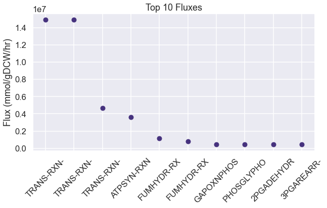
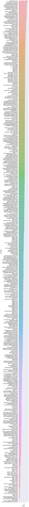
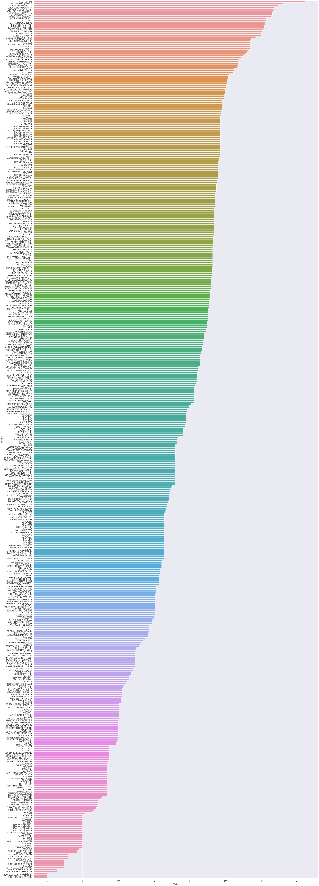

[1]:
import numpy as np
import seaborn as sns
import pandas as pd
import os
import matplotlib.pyplot as plt
import dill
import requests
import xmltodict
import cvxpy as cp
import itertools
from scipy.special import logsumexp
sns.set(style='darkgrid', palette='viridis', context='talk')
os.chdir(os.path.expanduser('~/vivarium-ecoli'))
from ecoli.processes.metabolism_redux import NetworkFlowModel, FlowResult
Import simulation output
Before running this, run a sim in ecoli/experiments/metabolism_redux_sim.py with -n 2 to generate a simulation output. This is necessary to replicate the simulation environment. Use the default .json config.
[2]:
time = '10'
date = '2023-04-14'
experiment = 'fba-redux-standard'
entry = f'{experiment}_{time}_{date}'
folder = f'out/fbagd/{entry}/'
[3]:
output = np.load(folder + 'output.npy',allow_pickle='TRUE').item()
# output = np.load(r"out/geneRxnVerifData/output_glc.npy", allow_pickle=True, encoding='ASCII').tolist()
output = output['agents']['0']
fba = output['listeners']['fba_results']
mass = output['listeners']['mass']
bulk = pd.DataFrame(output['bulk'])
[4]:
f = open(folder + 'agent_steps.pkl', 'rb')
agent = dill.load(f)
f.close()
[5]:
stoichiometry = agent['ecoli-metabolism'].model.stoichiometry
maintenance_reaction = agent['ecoli-metabolism'].model.maintenance_reaction
stoichiometry["maintenance_reaction"] = maintenance_reaction
bad_rxns = ["RXN-12440", "TRANS-RXN-121", "TRANS-RXN-300", "TRANS-RXN-8", "R15-RXN-MET/CPD-479//CPD-479/MET.25."]
# generate carbon mistake in parca, efflux/influx proton gen, iron cheating, mass gen
for rxn in bad_rxns:
stoichiometry.pop(rxn, None)
Pandas automatically understands dicts of dicts as matrices.
[6]:
sim_fluxes = pd.DataFrame(fba["estimated_fluxes"])
sim_fluxes = pd.DataFrame(sim_fluxes.loc[4, :].abs().sort_values(ascending=False))
sim_fluxes.head(10)
# plot the top 10 fluxes from sim_fluxes as a bar plot.
plt.figure(figsize=(10, 5))
plt.plot(sim_fluxes.head(10), 'o')
# shorten all xtick names to 10 characters
plt.xticks([i for i in range(10)], [i[:10] for i in sim_fluxes.index[:10]], rotation=45)
plt.ylabel('Flux (mmol/gDCW/hr)')
plt.title('Top 10 Fluxes')
plt.show()

Test changing nutrient composition
[7]:
uptake = (fba["unconstrained_molecules"][3]).copy()
uptake_c = fba["constrained_molecules"]
uptake.extend(list(uptake_c.keys()))
uptake = set(uptake)
# addition = set(["CPD0-1074[c]"])
addition = set([
"FRU[p]",
# "NITRATE[p]"
# 'THIAMINE[p]',
# 'HYDROGEN-MOLECULE[p]',
# 'FUM[p]'
])
removals = set([
"GLC[p]",
# # 'AMMONIUM[c]',
# # 'WATER[p]'
# # 'Pi[p]',
# # 'SULFATE[p]'
# 'OXYGEN-MOLECULE[p]'
])
uptake = uptake | addition
uptake = uptake - removals
uptake
[7]:
{'AMMONIUM[c]',
'CA+2[p]',
'CARBON-DIOXIDE[p]',
'CL-[p]',
'CO+2[p]',
'FE+2[p]',
'FRU[p]',
'K+[p]',
'L-SELENOCYSTEINE[c]',
'MG+2[p]',
'MN+2[p]',
'NA+[p]',
'NI+2[p]',
'OXYGEN-MOLECULE[p]',
'Pi[p]',
'SULFATE[p]',
'WATER[p]',
'ZN+2[p]'}
Use NetworkFlowModel class to run model
[8]:
homeostatic = pd.DataFrame(fba["target_homeostatic_dmdt"]).loc[4, :]
exchanges = pd.DataFrame(fba["estimated_exchange_dmdt"]).loc[4, :]
maintenance = pd.DataFrame(fba["target_maintenance_flux"]).at[4, 0]
kinetic = pd.DataFrame(fba["target_kinetic_fluxes"]).loc[4, :]
homeostatic
[8]:
2-3-DIHYDROXYBENZOATE[c] 73
2-KETOGLUTARATE[c] 187
2-PG[c] 49
2K-4CH3-PENTANOATE[c] 72
4-AMINO-BUTYRATE[c] 161
...
WATER[c] 22086088
XYLULOSE-5-PHOSPHATE[c] 89
ZN+2[c] 89
ZN+2[p] 53
glycogen-monomer[c] 35110
Name: 4, Length: 172, dtype: int64
[9]:
model = NetworkFlowModel(reactions=stoichiometry, homeostatic_metabolites=list(dict(homeostatic).keys()))
[10]:
model.set_up_exchanges(exchanges=list(dict(exchanges).keys()), uptakes=uptake)
[11]:
solution: FlowResult = model.solve(homeostatic_targets=dict(homeostatic),
maintenance_target=maintenance,
kinetic_targets=dict(kinetic),
binary_kinetic_targets={},
objective_weights={'secretion': 0.001, 'efficiency': 0.00001, 'kinetics': 0.000001},
upper_flux_bound=100000000)
[12]:
pd.Series(solution.exchanges).sort_values(ascending=False).head(10)
[12]:
WATER[p] 1.736816e+07
FRU[p] 1.410108e+06
AMMONIUM[c] 1.375859e+06
OXYGEN-MOLECULE[p] 1.289748e+06
Pi[p] 1.776750e+05
K+[p] 5.145700e+04
SULFATE[p] 3.335100e+04
MG+2[p] 2.287000e+03
FE+2[p] 1.930000e+03
CA+2[p] 1.425000e+03
dtype: float64
[13]:
pd.Series(solution.velocities).sort_values(ascending=False).head(10)
[13]:
TRANS-RXN-145 1.736816e+07
ATPSYN-RXN (reverse) 4.181745e+06
maintenance_reaction 3.058992e+06
GAPOXNPHOSPHN-RXN 2.307510e+06
PHOSGLYPHOS-RXN (reverse) 2.307502e+06
NADH-DEHYDROG-A-RXN-NADH/UBIQUINONE-8/PROTON//NAD/CPD-9956/PROTON.46. 2.223745e+06
3PGAREARR-RXN (reverse) 2.083406e+06
2PGADEHYDRAT-RXN 2.083357e+06
TRANS-RXN0-545[CCO-PM-BAC-NEG]-CARBON-DIOXIDE//CARBON-DIOXIDE.47. (reverse) 1.893273e+06
RXN0-6717 1.410108e+06
dtype: float64
Filter S matrix to only include nonzero fluxes.
[14]:
# only include nonzero fluxes in solution.velocities
nonzero_velocities = {k: v for k, v in solution.velocities.items() if v != 0}
[15]:
# Use nonzero_velocities to filter S matrix
S_matrix = model.Sd.loc[:, nonzero_velocities.keys()]
# remove rows of S_used that sum to zero.
S_matrix = S_matrix.loc[(S_matrix != 0).any(axis=1)]
[16]:
nonzero_velocities
[16]:
{'1.5.1.20-RXN-5-METHYL-THF/NAD//METHYLENE-THF/NADH/PROTON.44. (reverse)': 3851.0,
'1.5.1.20-RXN-CPD-1302/NAD//CPD-12996/NADH/PROTON.36. (reverse)': 16094.999999999989,
'1PFRUCTPHOSN-RXN': 1238117.9886565732,
'1TRANSKETO-RXN-D-SEDOHEPTULOSE-7-P/GAP//CPD-16551/XYLULOSE-5-PHOSPHATE.56. (reverse)': 7974.0,
'2-DEHYDROPANTOATE-REDUCT-RXN (reverse)': 1131.0000000000148,
'2-ISOPROPYLMALATESYN-RXN': 56297.00000000001,
'2-OCTAPRENYL-6-METHOXYPHENOL-HYDROX-RXN': 300.0,
'2-OCTAPRENYL-6-OHPHENOL-METHY-RXN': 300.0,
'2-OCTAPRENYL-METHOXY-BENZOQ-METH-RXN': 300.0,
'2-OCTAPRENYLPHENOL-HYDROX-RXN': 300.0,
'2.3.1.157-RXN': 16505.000000000004,
'2.5.1.19-RXN': 50577.000000000015,
'2.5.1.64-RXN': 105.99999999999997,
'2.7.1.148-RXN': 47391.00000000001,
'2.7.7.60-RXN': 47391.00000000001,
'2.8.1.6-RXN': 10.0,
'2OXOGLUTARATEDEH-RXN': 248858.9773131477,
'2PGADEHYDRAT-RXN': 2083356.9773131495,
'2TRANSKETO-RXN (reverse)': 50658.00000000003,
'3-CH3-2-OXOBUTANOATE-OH-CH3-XFER-RXN-CPD-12996/2-KETO-ISOVALERATE/WATER//2-DEHYDROPANTOATE/CPD-1301.63.': 1131.0000000000148,
'3-DEHYDROQUINATE-DEHYDRATASE-RXN': 50584.00000000002,
'3-DEHYDROQUINATE-SYNTHASE-RXN': 50584.00000000003,
'3-OCTAPRENYL-4-OHBENZOATE-DECARBOX-RXN': 300.0,
'3.2.2.10-RXN-CMP/WATER//RIBOSE-5P/CYTOSINE.30.': 4.0,
'3.2.2.10-RXN-UMP/WATER//RIBOSE-5P/URACIL.28.': 1967.9999999999993,
'325-BISPHOSPHATE-NUCLEOTIDASE-RXN': 30709.000000000004,
'3PGAREARR-RXN (reverse)': 2083405.9773131497,
'4OHBENZOATE-OCTAPRENYLTRANSFER-RXN': 300.0,
'5.1.3.20-RXN': 7772.0,
'5.4.2.10-RXN-CPD-13469//GLUCOSAMINE-1P.26.': 16505.0,
'6PGLUCONOLACT-RXN': 75194.99999999833,
'ACECOATRANS-RXN-PROPIONYL-COA/ACET//PROPIONATE/ACETYL-COA.42.': 83124.0,
'ACETATEKIN-RXN': 568.0,
'ACETOLACTREDUCTOISOM-RXN (reverse)': 111928.0,
'ACETOLACTSYN-RXN': 90266.0,
'ACETOOHBUTREDUCTOISOM-RXN (reverse)': 39206.99999999999,
'ACETOOHBUTSYN-RXN': 39206.99999999999,
'ACETYL-COA-ACETYLTRANSFER-RXN': 10.0,
'ACETYLGLUTKIN-RXN': 46480.0,
'ACETYLORNDEACET-RXN': 46458.00000000001,
'ACETYLORNTRANSAM-RXN (reverse)': 46480.0,
'ACONITATEDEHYDR-RXN': 6.999999999999999,
'ACSERLY-RXN': 33348.0,
'ADCLY-RXN': 99.00000000000341,
'ADENOSYLHOMOCYSTEINE-NUCLEOSIDASE-RXN': 1070.9999999999998,
'ADENPRIBOSYLTRAN-RXN (reverse)': 2823.0,
'ADENYL-KIN-RXN': 277347.9999999967,
'ADENYLOSUCCINATE-SYNTHASE-RXN': 36221.99999999834,
'ADENYLYLSULFKIN-RXN': 33348.00000000001,
'ADOMET-DMK-METHYLTRANSFER-RXN': 53.0,
'AICARSYN-RXN': 43908.99999999835,
'AICARTRANSFORM-RXN-10-FORMYL-THF/AICAR//THF/PHOSPHORIBOSYL-FORMAMIDO-CARBOXAMIDE.62.': 57150.99999999835,
'AIRS-RXN': 43957.99999999835,
'ALANINE-AMINOTRANSFERASE-RXN (reverse)': 81414.99999999999,
'ALARACECAT-RXN': 4789.999999999999,
'AMPSYN-RXN': 36221.99999999834,
'ANTHRANSYN-RXN': 6468.0,
'ARGSUCCINLYA-RXN': 36239.0,
'ARGSUCCINSYN-RXN': 36332.0,
'ASNSYNA-RXN': 29512.999999999996,
'ASPAMINOTRANS-RXN': 128030.97731314934,
'ASPARTASE-RXN (reverse)': 427027.9773131461,
'ASPARTATE-SEMIALDEHYDE-DEHYDROGENASE-RXN (reverse)': 67322.99999999997,
'ASPARTATEKIN-RXN': 43983.999999999985,
'ASPCARBTRANS-RXN': 42406.00000000001,
'ASPDECARBOX-RXN': 1131.0000000000148,
'ATPPHOSPHORIBOSYLTRANS-RXN (reverse)': 13242.0,
'ATPSYN-RXN (reverse)': 4181744.9891011864,
'BRANCHED-CHAINAMINOTRANSFERILEU-RXN (reverse)': 39207.0,
'BRANCHED-CHAINAMINOTRANSFERLEU-RXN (reverse)': 56224.99999999999,
'BRANCHED-CHAINAMINOTRANSFERVAL-RXN (reverse)': 54499.99999999999,
'CARDIOLIPSYN-RXN-CPD-8260//CPD-12824/GLYCEROL.29.': 1486.0,
'CDPDIGLYSYN-RXN-CTP/CPD0-1422/PROTON//CPD-12815/PPI.36.': 30629.0,
'CDPKIN-RXN': 90768.0,
'CHORISMATE-SYNTHASE-RXN': 50577.000000000015,
'CHORPYRLY-RXN': 326.99999999999994,
'CITSYN-RXN': 482742.9773131495,
'CPM-KDOSYNTH-RXN': 3886.0,
'CYSTATHIONINE-BETA-LYASE-RXN': 19070.999999999993,
'D-PPENTOMUT-RXN (reverse)': 1970.9999999999993,
'DAPASYN-RXN': 10.0,
'DEOXYADENPHOSPHOR-RXN (reverse)': 2.0,
'DEOXYGUANPHOSPHOR-RXN (reverse)': 1.0,
'DEOXYRIBOSE-P-ALD-RXN (reverse)': 2130.9999999999995,
'DEPHOSPHOCOAKIN-RXN': 1107.0000000000146,
'DETHIOBIOTIN-SYN-RXN': 10.0,
'DHBDEHYD-RXN': 234.99999999999997,
'DHHB-METHYLTRANSFER-RXN': 300.0,
'DIAMINOPIMDECARB-RXN': 44068.0,
'DIAMINOPIMEPIM-RXN': 48067.99999999999,
'DIHYDRODIPICSYN-RXN': 48126.0,
'DIHYDROFOLATESYNTH-RXN': 99.00000000000341,
'DIHYDRONEOPTERIN-MONO-P-DEPHOS-RXN': 99.00000000000342,
'DIHYDROOROT-RXN (reverse)': 42093.00000000001,
'DIHYDROOROTATE-DEHYDROGENASE-RXN-DI-H-OROTATE/UBIQUINONE-8//OROTATE/CPD-9956.44.': 41059.0,
'DIHYDROXYISOVALDEHYDRAT-RXN': 111928.0,
'DIHYDROXYMETVALDEHYDRAT-RXN': 39206.99999999999,
'DIMETHUROPORDEHYDROG-RXN': 54.00000000000001,
'DIOHBUTANONEPSYN-RXN': 258.0,
'DMK-RXN': 105.99999999999997,
'DTDPKIN-RXN': 2455.9999999999995,
'DTMPKI-RXN': 2655.9999999999995,
'DURIDKI-RXN': 1967.9999999999995,
'DXPREDISOM-RXN (reverse)': 47391.00000000001,
'DXS-RXN': 47489.00000000001,
'ENTMULTI-RXN': 54.00000000000001,
'ERYTH4PDEHYDROG-RXN': 48.99999999999999,
'ERYTHRON4PDEHYDROG-RXN': 48.99999999999999,
'FADSYN-RXN': 91.0,
'FGAMSYN-RXN': 43957.99999999835,
'FPPSYN-RXN': 4419.000000000001,
'FRUCTOKINASE-RXN': 171989.99999999834,
'GAPOXNPHOSPHN-RXN': 2307509.9773131465,
'GART-RXN-10-FORMYL-THF/5-PHOSPHO-RIBOSYL-GLYCINEAMIDE//THF/5-P-RIBOSYL-N-FORMYLGLYCINEAMIDE/PROTON.90.': 43957.999999998356,
'GDPKIN-RXN': 65152.99999999835,
'GDPPYPHOSKIN-RXN': 24.999999999999996,
'GLU6PDEHYDROG-RXN-GLC-6-P/NADP//D-6-P-GLUCONO-DELTA-LACTONE/NADPH/PROTON.55.': 75194.99999999833,
'GLUC1PADENYLTRANS-RXN': 35111.0,
'GLUC1PURIDYLTRANS-RXN': 9401.0,
'GLUCOSAMINE-6-P-DEAMIN-RXN (reverse)': 17117.0,
'GLUTAMINESYN-RXN': 122975.99999999673,
'GLUTATHIONE-SYN-RXN': 7682.0,
'GLUTCYSLIG-RXN': 7682.0,
'GLUTDEHYD-RXN (reverse)': 708489.0226868491,
'GLUTKIN-RXN': 25565.0,
'GLUTRACE-RXN': 3999.9999999999995,
'GLUTRNAREDUCT-RXN (reverse)': 864.0000000000003,
'GLUTSEMIALDEHYDROG-RXN (reverse)': 25565.0,
'GLYC3PDEHYDROGBIOSYN-RXN-GLYCEROL-3P/NAD//DIHYDROXY-ACETONE-PHOSPHATE/NADH/PROTON.57. (reverse)': 39046.00000000001,
'GLYCDEH-RXN': 1485.9999999999998,
'GLYCOLALD-DEHYDROG-RXN': 99.0000000000034,
'GLYCOLATEDEHYDRO-RXN': 99.00000000000341,
'GLYOHMETRANS-RXN-SER/CPD-1301//GLY/CPD-12996/WATER.34.': 17226.000000000004,
'GLYOHMETRANS-RXN-SER/THF//GLY/METHYLENE-THF/WATER.33.': 107665.99999999671,
'GLYRIBONUCSYN-RXN': 43957.99999999834,
'GMKALT-RXN (reverse)': 26.999999999999996,
'GMP-SYN-NH3-RXN': 20522.000000000007,
'GPPSYN-RXN': 4419.000000000001,
'GSAAMINOTRANS-RXN': 864.0000000000003,
'GTP-CYCLOHYDRO-I-RXN': 99.00000000000342,
'GTP-CYCLOHYDRO-II-RXN': 129.0,
'GUANYL-KIN-RXN': 29205.000000000004,
'H2NEOPTERINALDOL-RXN': 99.00000000000341,
'H2NEOPTERINP3PYROPHOSPHOHYDRO-RXN': 99.00000000000342,
'H2PTERIDINEPYROPHOSPHOKIN-RXN': 99.00000000000341,
'H2PTEROATESYNTH-RXN': 99.00000000000341,
'HISTAMINOTRANS-RXN (reverse)': 13241.999999999998,
'HISTCYCLOHYD-RXN': 13241.999999999996,
'HISTIDPHOS-RXN[CCO-CYTOSOL]-L-HISTIDINOL-P/WATER//HISTIDINOL/Pi.49.': 13241.999999999998,
'HISTPRATPHYD-RXN': 13241.999999999998,
'HOMOCYSMET-RXN': 16094.999999999989,
'HOMOCYSMETB12-RXN-HOMO-CYS/5-METHYL-THF//MET/THF.31.': 3850.9999999999995,
'HOMOSERDEHYDROG-RXN-HOMO-SER/NAD//L-ASPARTATE-SEMIALDEHYDE/NADH/PROTON.51. (reverse)': 19196.999999999993,
'HOMSUCTRAN-RXN': 19070.99999999999,
'IGPSYN-RXN': 6467.0,
'IMIDPHOSDEHYD-RXN': 13242.0,
'IMP-DEHYDROG-RXN': 20522.000000000007,
'IMPCYCLOHYDROLASE-RXN (reverse)': 57150.999999998356,
'INOPHOSPHOR-RXN (reverse)': 2.0000000000000004,
'INORGPYROPHOSPHAT-RXN[CCO-CYTOSOL]-PPI/WATER//Pi/PROTON.34.': 535477.9999999984,
'INOSINEKIN-RXN': 3.0000000000000004,
'ISOCHORMAT-RXN': 234.99999999999997,
'ISOCIT-CLEAV-RXN': 62574.00000000164,
'ISOCITDEH-RXN': 419041.9773131478,
'ISPH2-RXN (reverse)': 42972.0,
'KDO-8PPHOSPHAT-RXN': 3886.0,
'KDO-8PSYNTH-RXN': 3886.0,
'KDOTRANS-RXN': 1943.0,
'KDOTRANS2-RXN': 1943.0,
'LIPIDADISACCHARIDESYNTH-RXN': 1943.0,
'LIPIDXSYNTHESIS-RXN': 1943.0,
'LUMAZINESYN-RXN': 258.0,
'MALSYN-RXN': 1055.0,
'METHENYLTHFCYCLOHYDRO-RXN-5-10-METHENYL-THF/WATER//10-FORMYL-THF/PROTON.46.': 101108.9999999967,
'METHYLENETHFDEHYDROG-NADP-RXN-METHYLENE-THF/NADP//5-10-METHENYL-THF/NADPH.44.': 101108.99999999671,
'METHYLMALONYL-COA-MUT-RXN (reverse)': 2.9999999999949027,
'METHYLTHIOADENOSINE-NUCLEOSIDASE-RXN': 1638.0,
'N-ACETYLGLUTPREDUCT-RXN (reverse)': 46480.0,
'N-ACETYLTRANSFER-RXN': 46479.99999999999,
'NACGLCTRANS-RXN': 4000.0,
'NAD-KIN-RXN': 137.99999999995487,
'NAD-SYNTH-NH3-RXN': 1407.999999999983,
'NADH-DEHYDROG-A-RXN-NADH/UBIQUINONE-8/PROTON//NAD/CPD-9956/PROTON.46.': 2223744.8865657323,
'NAG1P-URIDYLTRANS-RXN': 16463.0,
'NAPHTHOATE-SYN-RXN': 105.99999999999997,
'NICONUCADENYLYLTRAN-RXN': 1407.999999999983,
'NUCLEOSIDE-DIPHOSPHATASE-RXN-DUDP/WATER//DUMP/Pi/PROTON.27.': 687.9999999999999,
'O-SUCCHOMOSERLYASE-RXN': 19070.999999999993,
'O-SUCCINYLBENZOATE-COA-LIG-RXN': 105.99999999999997,
'O-SUCCINYLBENZOATE-COA-SYN-RXN': 105.99999999999997,
'OCTAPRENYL-METHYL-METHOXY-BENZOQ-OH-RXN': 300.0,
'OHMETHYLBILANESYN-RXN': 108.00000000000003,
'ORNCARBAMTRANSFER-RXN': 36737.0,
'ORNDECARBOX-RXN': 9716.0,
'OROPRIBTRANS-RXN (reverse)': 38151.00000000001,
'OROTPDECARB-RXN': 38151.00000000001,
'P-PANTOCYSDECARB-RXN': 1107.0000000000146,
'P-PANTOCYSLIG-RXN': 1107.0000000000146,
'PABASYN-RXN': 99.00000000000341,
'PANTEPADENYLYLTRAN-RXN': 1107.0000000000146,
'PANTOATE-BETA-ALANINE-LIG-RXN': 1131.0000000000148,
'PANTOTHENATE-KIN-RXN': 1107.0000000000146,
'PDXJ-RXN': 48.99999999999999,
'PEPCARBOX-RXN (reverse)': 354713.0000000001,
'PEPDEPHOS-RXN (reverse)': 209423.98865657835,
'PGLUCISOM-RXN-GLC-6-P//FRUCTOSE-6P.21. (reverse)': 122063.99999999831,
'PGLYCDEHYDROG-RXN': 223276.9999999967,
'PGPPHOSPHA-RXN-CPD-12821/WATER//CPD-8260/Pi.29.': 8324.000000000002,
'PHOSGLYPHOS-RXN (reverse)': 2307501.977313146,
'PHOSNACMURPENTATRANS-RXN': 4000.0,
'PHOSPHAGLYPSYN-RXN-CPD-12815/GLYCEROL-3P//CMP/CPD-12821/PROTON.44.': 8324.0,
'PHOSPHASERDECARB-RXN-CPD-12817/PROTON//CPD-12819/CARBON-DIOXIDE.43.': 22305.0,
'PHOSPHASERSYN-RXN-CPD-12815/SER//CMP/CPD-12817/PROTON.36.': 22305.0,
'PHOSPHOGLUCMUT-RXN-GLC-1-P//GLC-6-P.17. (reverse)': 44511.99999999999,
'PNPOXI-RXN': 48.99999999999999,
'PORPHOBILSYNTH-RXN': 432.00000000000017,
'PRAISOM-RXN': 6467.0,
'PREPHENATEDEHYDRAT-RXN': 23552.000000000004,
'PREPHENATEDEHYDROG-RXN': 19736.0,
'PRIBFAICARPISOM-RXN': 13241.999999999996,
'PROTOHEMEFERROCHELAT-RXN[CCO-CYTOSOL]-PROTOHEME/PROTON//PROTOPORPHYRIN_IX/FE+2.54. (reverse)': 54.00000000000001,
'PRPPAMIDOTRANS-RXN (reverse)': 43957.99999999834,
'PRPPSYN-RXN': 1711.9999999999998,
'PRPPSYN-RXN-CPD-16551/ATP//PRPP/AMP/PROTON.31.': 104473.99999999834,
'PRTRANS-RXN (reverse)': 6467.0,
'PSERTRANSAM-RXN (reverse)': 222526.99999999668,
'PSERTRANSAMPYR-RXN (reverse)': 48.99999999999999,
'PYRIMSYN1-RXN': 49.00000000000001,
'PYRIMSYN3-RXN': 49.00000000000001,
'PYRROLINECARBREDUCT-RXN-PRO/NAD//L-DELTA1-PYRROLINE_5-CARBOXYLATE/NADH/PROTON.54. (reverse)': 25565.0,
'PYRUVDEH-RXN': 1027758.9773131494,
'QUINOLINATE-SYNTHA-RXN': 1412.9999999999834,
'QUINOPRIBOTRANS-RXN (reverse)': 1407.9999999999832,
'R15-RXN-MET/2-KETOGLUTARATE//CPD-479/GLT.33. (reverse)': 61618.000000001644,
'R15-RXN-MET/GLYOX//CPD-479/GLY.23.': 61618.00000000164,
'RIB5PISOM-RXN-CPD-16551//RIBULOSE-5P.23. (reverse)': 112399.99999999834,
'RIBOFLAVIN-SYN-RXN': 129.0,
'RIBOFLAVINKIN-RXN': 119.0,
'RIBOFLAVINSYNDEAM-RXN': 129.0,
'RIBOFLAVINSYNREDUC-RXN (reverse)': 129.0,
'RIBOPHOSPHAT-RXN': 129.0,
'RIBOSYLHOMOCYSTEINASE-RXN': 1070.9999999999998,
'RIBULP3EPIM-RXN (reverse)': 42595.00000000003,
'RXN-10814 (reverse)': 23505.0,
'RXN-11032 (reverse)': 200.9999999999966,
'RXN-11319': 49.00000000000001,
'RXN-11475': 10.0,
'RXN-11484': 10.0,
'RXN-11832': 90785.0,
'RXN-12002': 48258.0,
'RXN-12588': 10.0,
'RXN-12611': 49.0,
'RXN-13158': 56297.0,
'RXN-13163 (reverse)': 56297.0,
'RXN-13179': 48.99999999999999,
'RXN-13202': 79143.0,
'RXN-13403': 54.00000000000001,
'RXN-14014-DELTA1-PIPERIDEINE-2-6-DICARBOXYLATE/NAD/WATER//CPD-14443/NADH/PROTON.70. (reverse)': 48125.99999999999,
'RXN-14025[CCO-CYTOSOL]-UMP/WATER//URIDINE/Pi.35.': 1111.0,
'RXN-14026[CCO-CYTOSOL]-CMP/WATER//CYTIDINE/Pi.36.': 0.9999999999999999,
'RXN-14047': 481759.97731314943,
'RXN-14325': 14879.000000000013,
'RXN-15216': 1071.0,
'RXN-15878 (reverse)': 47391.00000000001,
'RXN-15943 (reverse)': 1071.0,
'RXN-16804': 3886.0,
'RXN-17900': 13241.999999999998,
'RXN-19329 (reverse)': 2755.000000000003,
'RXN-19737': 1943.0,
'RXN-21483-PROTOPORPHYRINOGEN/UBIQUINONE-8//PROTOPORPHYRIN_IX/CPD-9956.60.': 54.000000000000014,
'RXN-21817-CPD-9956/PROTON/OXYGEN-MOLECULE//UBIQUINONE-8/PROTON/WATER.59.': 1288717.4319394408,
'RXN-6081': 200.9999999999966,
'RXN-6161': 80807.00000000001,
'RXN-8001': 13235.999999999998,
'RXN-8992': 405.99999999999994,
'RXN-8999': 4013.0000000000005,
'RXN-9310': 105.99999999999997,
'RXN-9311': 105.99999999999997,
'RXN-9772': 1412.9999999999834,
'RXN-9952': 74069.99999999831,
'RXN0-12': 89.0,
'RXN0-1461': 54.000000000000014,
'RXN0-16': 181.0,
'RXN0-2421': 1878.0000000000002,
'RXN0-2501': 686.0000000000001,
'RXN0-268 (reverse)': 83124.0,
'RXN0-302': 47391.00000000001,
'RXN0-305': 750.0,
'RXN0-310': 2.999999999994903,
'RXN0-313 (reverse)': 1454.9999999999998,
'RXN0-4301': 7772.0,
'RXN0-4341': 7772.0,
'RXN0-4342': 7772.0,
'RXN0-4361': 7772.0,
'RXN0-5038': 1.0000000000000002,
'RXN0-5061': 1943.0,
'RXN0-5114[CCO-CYTOSOL]-3-P-SERINE/WATER//SER/Pi.38.': 222526.9999999967,
'RXN0-5118': 1943.0,
'RXN0-5120': 1943.0,
'RXN0-5121': 1943.0,
'RXN0-5122': 1943.0,
'RXN0-5123': 1943.0,
'RXN0-5124': 1943.0,
'RXN0-5125': 1943.0,
'RXN0-5126': 1943.0,
'RXN0-5127': 1943.0,
'RXN0-5185[CCO-CYTOSOL]-CPD-2961/WATER//GLUCONATE/Pi.42.': 21.0,
'RXN0-5186': 169010.99999999834,
'RXN0-5199': 3.0,
'RXN0-5224 (reverse)': 974623.9999999985,
'RXN0-5289 (reverse)': 750.0000000000001,
'RXN0-5461': 1071.0,
'RXN0-6550': 117.99999999999999,
'RXN0-6562': 750.0,
'RXN0-7352-GMP/WATER//GUANINE/CPD-16551.29.': 47.99999999999999,
'RXN0-742': 43908.99999999835,
'RXN0-743': 43908.99999999835,
'RXN0-884 (reverse)': 4419.000000000001,
'RXN3O-470-ACETALD//CPD-255.17. (reverse)': 200.99999999999696,
'S-ADENMETSYN-RXN': 2934.0000000000005,
'SAICARSYN-RXN': 43908.99999999835,
'SAMDECARB-RXN': 1638.0,
'SHIKIMATE-5-DEHYDROGENASE-RXN (reverse)': 50584.00000000002,
'SHIKIMATE-KINASE-RXN': 50577.00000000002,
'SIROHEME-FERROCHELAT-RXN': 54.00000000000001,
'SPERMIDINESYN-RXN': 1638.0,
'SPONTPRO-RXN (reverse)': 25565.0,
'SUCCCOASYN-RXN (reverse)': 98411.97731314773,
'SUCCDIAMINOPIMDESUCC-RXN': 48125.99999999999,
'SUCCINATE-DEHYDROGENASE-UBIQUINONE-RXN-SUC/UBIQUINONE-8//FUM/CPD-9956.31.': 312468.9773131494,
'SUCCINYLDIAMINOPIMTRANS-RXN (reverse)': 48125.99999999999,
'SULFATE-ADENYLYLTRANS-RXN': 33351.00000000001,
'SULFITE-REDUCT-RXN (reverse)': 33348.00000000001,
'TETHYDPICSUCC-RXN': 48125.99999999999,
'TETRAACYLDISACC4KIN-RXN': 1943.0,
'THI-P-KIN-RXN': 48.99999999999999,
'THREDEHYD-RXN': 39207.0,
'THREONINE-ALDOLASE-RXN (reverse)': 79078.00000000001,
'THYMIDYLATESYN-RXN-METHYLENE-THF/DUMP//TMP/DIHYDROFOLATE.38.': 2655.9999999999995,
'TRANS-RXN-1': 497.00000000000347,
'TRANS-RXN-114': 177621.99999999587,
'TRANS-RXN-141': 2287.0,
'TRANS-RXN-141A': 6.999999999999999,
'TRANS-RXN-141B': 85.0,
'TRANS-RXN-145': 17368157.068060577,
'TRANS-RXN-3': 51456.99999999999,
'TRANS-RXN-62A': 999.9999999999999,
'TRANS-RXN0-277 (reverse)': 1067381.045373708,
'TRANS-RXN0-286': 3999.9999999999995,
'TRANS-RXN0-459': 10.0,
'TRANS-RXN0-461': 1638.0,
'TRANS-RXN0-474': 1289695.9319394408,
'TRANS-RXN0-497': 1372.0,
'TRANS-RXN0-500': 49.00000000000001,
'TRANS-RXN0-545[CCO-PM-BAC-NEG]-CARBON-DIOXIDE//CARBON-DIOXIDE.47. (reverse)': 1893272.931939446,
'TRANS-RXN0-556[CCO-PM-BAC-NEG]-CARBON-MONOXIDE//CARBON-MONOXIDE.49. (reverse)': 49.00000000000001,
'TRANS-RXN0-586': 33351.00000000001,
'TRIOSEPISOMERIZATION-RXN (reverse)': 1177220.9886565732,
'TRYPSYN-RXN': 6466.999999999999,
'TYROSINE-AMINOTRANSFERASE-RXN (reverse)': 19736.0,
'UDP-NACMUR-ALA-LIG-RXN': 4000.0,
'UDP-NACMURALA-GLU-LIG-RXN': 4000.0,
'UDP-NACMURALGLDAPAALIG-RXN': 4000.0,
'UDP-NACMURALGLDAPLIG-RXN': 4000.0,
'UDPACYLGLCNACDEACETYL-RXN': 3886.0,
'UDPGLUCEPIM-RXN': 1942.9999999999998,
'UDPKIN-RXN': 62721.00000000001,
'UDPNACETYLGLUCOSAMENOLPYRTRANS-RXN': 4000.0,
'UDPNACETYLMURAMATEDEHYDROG-RXN (reverse)': 4000.0,
'UGD-RXN': 301.0,
'UNDECAPRENYL-DIPHOSPHATASE-RXN[CCO-CYTOSOL]-UNDECAPRENYL-DIPHOSPHATE/WATER//CPD-9646/Pi/PROTON.64.': 3857.0,
'URA-PHOSPH-RXN (reverse)': 1967.9999999999998,
'UROGENDECARBOX-RXN': 54.000000000000014,
'UROGENIIISYN-RXN': 108.00000000000004,
'glycogen-monomer-extension': 35110.0,
'GLURS-RXN-GLT-tRNAs/GLT/ATP/PROTON//Charged-GLT-tRNAs/AMP/PPI.52.': 864.0000000000003,
'RXN0-5405': 1999.9999999999998,
'RXN-11302': 999.9999999999999,
'1.8.4.8-RXN (reverse)': 33348.00000000001,
'2.3.1.180-RXN': 72916.00000000001,
'3-HYDROXYDECANOYL-ACP-DEHYDR-RXN-POLYMER-INST-OH-ACYL-ACP-C0-H0//POLYMER-INST-TRANS-D2-ENOYL-ACP-C0-H0/WATER.76.': 72916.0,
'3-HYDROXYDECANOYL-ACP-DEHYDR-RXN-POLYMER-INST-OH-ACYL-ACP-C12-H24//2-Hexadecenoyl-ACPs/WATER.60.': 61258.0,
'3-OXOACYL-ACP-REDUCT-RXN-POLYMER-INST-OH-ACYL-ACP-C0-H0/NADP//Acetoacetyl-ACPs/NADPH/PROTON.67. (reverse)': 72916.0,
'3-OXOACYL-ACP-REDUCT-RXN-POLYMER-INST-OH-ACYL-ACP-C12-H24/NADP//3-oxo-palmitoyl-ACPs/NADPH/PROTON.73. (reverse)': 61258.0,
'4.2.1.59-RXN': 72916.00000000001,
'BIOTIN-CARBOXYL-RXN': 496859.0000000001,
'ENOYL-ACP-REDUCT-NADH-RXN-Butanoyl-ACPs/NAD//POLYMER-INST-TRANS-D2-ENOYL-ACP-C0-H0/NADH/PROTON.69. (reverse)': 72916.0,
'FERREDOXIN--NAD+-REDUCTASE-RXN (reverse)': 9.999999999999998,
'LAUROYLACYLTRAN-RXN': 1943.0,
'MALONYL-COA-ACP-TRANSACYL-RXN': 496841.00000000006,
'MYRISTOYLACYLTRAN-RXN': 1943.0,
'PRODISULFREDUCT-A-RXN-GLUTATHIONE/Oxidized-NrdH-Proteins//OXIDIZED-GLUTATHIONE/Reduced-NrdH-Proteins.79.': 714.9999999999999,
'PYFLAVOXRE-RXN': 47391.00000000001,
'PYRUFLAVREDUCT-RXN': 47440.00000000001,
'RXN-11474': 10.0,
'RXN-11476 (reverse)': 10.0,
'RXN-11477': 10.0,
'RXN-11478 (reverse)': 10.0,
'RXN-11479': 10.0,
'RXN-11480 (reverse)': 10.0,
'RXN-11481': 10.0,
'RXN-11482 (reverse)': 10.0,
'RXN-11483': 10.0,
'RXN-17018': 30629.0,
'RXN-9516': 72916.0,
'RXN-9518 (reverse)': 72916.0,
'RXN-9520': 72916.0,
'RXN-9523': 72916.0,
'RXN-9524 (reverse)': 72916.00000000001,
'RXN-9527': 72916.0,
'RXN-9528 (reverse)': 72916.0,
'RXN-9531': 72916.0,
'RXN-9532 (reverse)': 72916.0,
'RXN-9533': 72916.0,
'RXN-9535': 70854.00000000001,
'RXN-9536 (reverse)': 70973.0,
'RXN-9537': 63201.0,
'RXN-9539': 61258.00000000001,
'RXN-9655': 72916.00000000001,
'RXN-9658 (reverse)': 72916.0,
'RXN-9659 (reverse)': 72916.00000000001,
'RXN-9660 (reverse)': 72916.0,
'RXN-9661 (reverse)': 72916.00000000001,
'RXN-9662 (reverse)': 63201.0,
'RXN-9663 (reverse)': 61258.0,
'RXN-9787': 48.99999999999999,
'RXN-9788': 49.0,
'RXN-9789': 49.0,
'RXN0-5055': 496859.0000000001,
'RXN0-6705': 30628.999999999996,
'RXN0-6717': 1410107.9886565716,
'RXN0-722 (reverse)': 688.0,
'RXN0-723': 18.0,
'RXN0-745': 12.000000000000002,
'RXN0-746': 8.000000000000002,
'RXN0-748 (reverse)': 26.999999999999993,
'THIAZOLSYN2-RXN': 49.0,
'THIOREDOXIN-REDUCT-NADPH-RXN (reverse)': 33348.0,
'TRANS-RXN0-582-FRU/PTSI-PHOSPHORYLATED//FRU1P/PTSI-MONOMER.44.': 1410107.9886565716,
'UDPHYDROXYMYRGLUCOSAMNACETYLTRANS-RXN': 3886.0,
'UDPNACETYLGLUCOSAMACYLTRANS-RXN': 3886.0,
'325-BISPHOSPHATE-NUCLEOTIDASE-RXN__EG10043-MONOMER': 2639.0,
'ACETOLACTSYN-RXN__ACETOLACTSYNI-CPLX': 21863.000000000004,
'ALARACECAT-RXN__CPLX0-8202': 2318.0,
'ASNSYNA-RXN__ASNSYNB-CPLX': 381.0,
'ASPARTATEKIN-RXN__ASPKINIHOMOSERDEHYDROGI-CPLX': 23339.0,
'CATAL-RXN__CPLX0-1683': 24.499999999999996,
'CHORISMATEMUT-RXN__CHORISMUTPREPHENDEHYDROG-CPLX': 43288.0,
'DAHPSYN-RXN__AROG-CPLX': 36475.00000000003,
'DAHPSYN-RXN__AROH-CPLX': 14109.0,
'DALADALALIG-RXN__DALADALALIGB-CPLX': 1869.9999999999998,
'DALADALALIG-RXN__DALADALALIGA-MONOMER': 2184.0,
'DARAB5PISOM-RXN__CPLX0-1262 (reverse)': 3886.0,
'F16ALDOLASE-RXN__FRUCBISALD-CLASSII': 1217576.988656573,
'F16ALDOLASE-RXN__FRUCBISALD-CLASSI': 35.0,
'F16BDEPHOS-RXN[CCO-CYTOSOL]-FRUCTOSE-16-DIPHOSPHATE/WATER//FRUCTOSE-6P/Pi.59.__F16B-CPLX': 11249.0,
'F16BDEPHOS-RXN[CCO-CYTOSOL]-FRUCTOSE-16-DIPHOSPHATE/WATER//FRUCTOSE-6P/Pi.59.__EG11239-MONOMER': 3294.0,
'F16BDEPHOS-RXN[CCO-CYTOSOL]-FRUCTOSE-16-DIPHOSPHATE/WATER//FRUCTOSE-6P/Pi.59.__CPLX0-303': 2570.0,
'F16BDEPHOS-RXN[CCO-CYTOSOL]-FRUCTOSE-16-DIPHOSPHATE/WATER//FRUCTOSE-6P/Pi.59.__CPLX0-7776': 4.0,
'GLUTDECARBOX-RXN__GLUTDECARBOXB-CPLX': 161.00000000000003,
'ISOCHORSYN-RXN__ENTC-MONOMER': 315.99999999999994,
'ISOCHORSYN-RXN__MENF-CPLX': 24.999999999999996,
'RXN-7609[CCO-CYTOSOL]-GMP/WATER//GUANOSINE/Pi.37.__G7742-MONOMER': 3.0,
'RXN-9535__FABB-CPLX': 119.0,
'RXN0-313__CPLX0-201 (reverse)': 30.999999999999996,
'RXN0-384__H2NEOPTERINP3PYROPHOSPHOHYDRO-MONOMER': 4.000000000000001,
'RXN0-5186__G7408-MONOMER': 2979.0,
'SERINE-O-ACETTRAN-RXN__CPLX0-237': 17162.000000000007,
'SERINE-O-ACETTRAN-RXN__CYSSYNMULTI-CPLX': 16186.0,
'UNDECAPRENYL-DIPHOSPHATASE-RXN[CCO-CYTOSOL]-UNDECAPRENYL-DIPHOSPHATE/WATER//CPD-9646/Pi/PROTON.64.__PGPPHOSPHAB-MONOMER': 143.0,
'maintenance_reaction': 3058991.943727506}
[17]:
S_matrix
[17]:
| 1.5.1.20-RXN-5-METHYL-THF/NAD//METHYLENE-THF/NADH/PROTON.44. (reverse) | 1.5.1.20-RXN-CPD-1302/NAD//CPD-12996/NADH/PROTON.36. (reverse) | 1PFRUCTPHOSN-RXN | 1TRANSKETO-RXN-D-SEDOHEPTULOSE-7-P/GAP//CPD-16551/XYLULOSE-5-PHOSPHATE.56. (reverse) | 2-DEHYDROPANTOATE-REDUCT-RXN (reverse) | 2-ISOPROPYLMALATESYN-RXN | 2-OCTAPRENYL-6-METHOXYPHENOL-HYDROX-RXN | 2-OCTAPRENYL-6-OHPHENOL-METHY-RXN | 2-OCTAPRENYL-METHOXY-BENZOQ-METH-RXN | 2-OCTAPRENYLPHENOL-HYDROX-RXN | ... | ISOCHORSYN-RXN__MENF-CPLX | RXN-7609[CCO-CYTOSOL]-GMP/WATER//GUANOSINE/Pi.37.__G7742-MONOMER | RXN-9535__FABB-CPLX | RXN0-313__CPLX0-201 (reverse) | RXN0-384__H2NEOPTERINP3PYROPHOSPHOHYDRO-MONOMER | RXN0-5186__G7408-MONOMER | SERINE-O-ACETTRAN-RXN__CPLX0-237 | SERINE-O-ACETTRAN-RXN__CYSSYNMULTI-CPLX | UNDECAPRENYL-DIPHOSPHATASE-RXN[CCO-CYTOSOL]-UNDECAPRENYL-DIPHOSPHATE/WATER//CPD-9646/Pi/PROTON.64.__PGPPHOSPHAB-MONOMER | maintenance_reaction | |
|---|---|---|---|---|---|---|---|---|---|---|---|---|---|---|---|---|---|---|---|---|---|
| NAD[c] | 1 | 1 | 0 | 0 | 0 | 0 | 0 | 0 | 0 | 0 | ... | 0 | 0 | 0 | 0 | 0 | 0 | 0 | 0 | 0 | 0 |
| NADH[c] | -1 | -1 | 0 | 0 | 0 | 0 | 0 | 0 | 0 | 0 | ... | 0 | 0 | 0 | 0 | 0 | 0 | 0 | 0 | 0 | 0 |
| PROTON[c] | -1 | -1 | 1 | 0 | -1 | 1 | -1 | 1 | 1 | -1 | ... | 0 | 0 | -1 | 0 | 1 | 0 | 0 | 0 | 1 | 1 |
| GLUCONATE[c] | 0 | 0 | 0 | 0 | 0 | 0 | 0 | 0 | 0 | 0 | ... | 0 | 0 | 0 | 0 | 0 | 0 | 0 | 0 | 0 | 0 |
| NADP[c] | 0 | 0 | 0 | 0 | 1 | 0 | 1 | 0 | 0 | 1 | ... | 0 | 0 | 0 | 0 | 0 | 0 | 0 | 0 | 0 | 0 |
| ... | ... | ... | ... | ... | ... | ... | ... | ... | ... | ... | ... | ... | ... | ... | ... | ... | ... | ... | ... | ... | ... |
| R-3-hydroxymyristoyl-ACPs[c] | 0 | 0 | 0 | 0 | 0 | 0 | 0 | 0 | 0 | 0 | ... | 0 | 0 | 0 | 0 | 0 | 0 | 0 | 0 | 0 | 0 |
| Adenylated-ThiS-Proteins[c] | 0 | 0 | 0 | 0 | 0 | 0 | 0 | 0 | 0 | 0 | ... | 0 | 0 | 0 | 0 | 0 | 0 | 0 | 0 | 0 | 0 |
| ThiS-CoASH-proteins[c] | 0 | 0 | 0 | 0 | 0 | 0 | 0 | 0 | 0 | 0 | ... | 0 | 0 | 0 | 0 | 0 | 0 | 0 | 0 | 0 | 0 |
| Thi-S[c] | 0 | 0 | 0 | 0 | 0 | 0 | 0 | 0 | 0 | 0 | ... | 0 | 0 | 0 | 0 | 0 | 0 | 0 | 0 | 0 | 0 |
| FRU[p] | 0 | 0 | 0 | 0 | 0 | 0 | 0 | 0 | 0 | 0 | ... | 0 | 0 | 0 | 0 | 0 | 0 | 0 | 0 | 0 | 0 |
491 rows × 471 columns
First test. Single flux set. No eQuilibrator or regulation.
[18]:
# sort nonzero_velocities to be in same order as S_matrix columns.
vE_dict = {k: nonzero_velocities[k] for k in S_matrix.columns}
vE = np.array([np.array(list(vE_dict.values()))])
[19]:
Sd = S_matrix
# Sd = pd.DataFrame(stoich_dict, dtype=np.int8).fillna(0).astype(np.int8)
# Sd = Sd.iloc[0:7, 0:2]
Sd
[19]:
| 1.5.1.20-RXN-5-METHYL-THF/NAD//METHYLENE-THF/NADH/PROTON.44. (reverse) | 1.5.1.20-RXN-CPD-1302/NAD//CPD-12996/NADH/PROTON.36. (reverse) | 1PFRUCTPHOSN-RXN | 1TRANSKETO-RXN-D-SEDOHEPTULOSE-7-P/GAP//CPD-16551/XYLULOSE-5-PHOSPHATE.56. (reverse) | 2-DEHYDROPANTOATE-REDUCT-RXN (reverse) | 2-ISOPROPYLMALATESYN-RXN | 2-OCTAPRENYL-6-METHOXYPHENOL-HYDROX-RXN | 2-OCTAPRENYL-6-OHPHENOL-METHY-RXN | 2-OCTAPRENYL-METHOXY-BENZOQ-METH-RXN | 2-OCTAPRENYLPHENOL-HYDROX-RXN | ... | ISOCHORSYN-RXN__MENF-CPLX | RXN-7609[CCO-CYTOSOL]-GMP/WATER//GUANOSINE/Pi.37.__G7742-MONOMER | RXN-9535__FABB-CPLX | RXN0-313__CPLX0-201 (reverse) | RXN0-384__H2NEOPTERINP3PYROPHOSPHOHYDRO-MONOMER | RXN0-5186__G7408-MONOMER | SERINE-O-ACETTRAN-RXN__CPLX0-237 | SERINE-O-ACETTRAN-RXN__CYSSYNMULTI-CPLX | UNDECAPRENYL-DIPHOSPHATASE-RXN[CCO-CYTOSOL]-UNDECAPRENYL-DIPHOSPHATE/WATER//CPD-9646/Pi/PROTON.64.__PGPPHOSPHAB-MONOMER | maintenance_reaction | |
|---|---|---|---|---|---|---|---|---|---|---|---|---|---|---|---|---|---|---|---|---|---|
| NAD[c] | 1 | 1 | 0 | 0 | 0 | 0 | 0 | 0 | 0 | 0 | ... | 0 | 0 | 0 | 0 | 0 | 0 | 0 | 0 | 0 | 0 |
| NADH[c] | -1 | -1 | 0 | 0 | 0 | 0 | 0 | 0 | 0 | 0 | ... | 0 | 0 | 0 | 0 | 0 | 0 | 0 | 0 | 0 | 0 |
| PROTON[c] | -1 | -1 | 1 | 0 | -1 | 1 | -1 | 1 | 1 | -1 | ... | 0 | 0 | -1 | 0 | 1 | 0 | 0 | 0 | 1 | 1 |
| GLUCONATE[c] | 0 | 0 | 0 | 0 | 0 | 0 | 0 | 0 | 0 | 0 | ... | 0 | 0 | 0 | 0 | 0 | 0 | 0 | 0 | 0 | 0 |
| NADP[c] | 0 | 0 | 0 | 0 | 1 | 0 | 1 | 0 | 0 | 1 | ... | 0 | 0 | 0 | 0 | 0 | 0 | 0 | 0 | 0 | 0 |
| ... | ... | ... | ... | ... | ... | ... | ... | ... | ... | ... | ... | ... | ... | ... | ... | ... | ... | ... | ... | ... | ... |
| R-3-hydroxymyristoyl-ACPs[c] | 0 | 0 | 0 | 0 | 0 | 0 | 0 | 0 | 0 | 0 | ... | 0 | 0 | 0 | 0 | 0 | 0 | 0 | 0 | 0 | 0 |
| Adenylated-ThiS-Proteins[c] | 0 | 0 | 0 | 0 | 0 | 0 | 0 | 0 | 0 | 0 | ... | 0 | 0 | 0 | 0 | 0 | 0 | 0 | 0 | 0 | 0 |
| ThiS-CoASH-proteins[c] | 0 | 0 | 0 | 0 | 0 | 0 | 0 | 0 | 0 | 0 | ... | 0 | 0 | 0 | 0 | 0 | 0 | 0 | 0 | 0 | 0 |
| Thi-S[c] | 0 | 0 | 0 | 0 | 0 | 0 | 0 | 0 | 0 | 0 | ... | 0 | 0 | 0 | 0 | 0 | 0 | 0 | 0 | 0 | 0 |
| FRU[p] | 0 | 0 | 0 | 0 | 0 | 0 | 0 | 0 | 0 | 0 | ... | 0 | 0 | 0 | 0 | 0 | 0 | 0 | 0 | 0 | 0 |
491 rows × 471 columns
[20]:
# K_eq = np.log(keq)
# K_eq_mod = K_eq[:, np.newaxis].T
# vE = np.array([[90, 70, -30, 50], [100, 100, 30, 50], [110, 60, 75, 50]])
# n_flux_set = vE.shape[0]
n_flux_set = 1
Sr = None
# K_eq[vE < 0] = 1/K_eq[vE < 0]
lvE = np.log(np.abs(vE))
pd.DataFrame(np.concatenate([vE, np.sign(vE)]), columns=Sd.columns,
index=["$v_1$", "sign 1"])
[20]:
| 1.5.1.20-RXN-5-METHYL-THF/NAD//METHYLENE-THF/NADH/PROTON.44. (reverse) | 1.5.1.20-RXN-CPD-1302/NAD//CPD-12996/NADH/PROTON.36. (reverse) | 1PFRUCTPHOSN-RXN | 1TRANSKETO-RXN-D-SEDOHEPTULOSE-7-P/GAP//CPD-16551/XYLULOSE-5-PHOSPHATE.56. (reverse) | 2-DEHYDROPANTOATE-REDUCT-RXN (reverse) | 2-ISOPROPYLMALATESYN-RXN | 2-OCTAPRENYL-6-METHOXYPHENOL-HYDROX-RXN | 2-OCTAPRENYL-6-OHPHENOL-METHY-RXN | 2-OCTAPRENYL-METHOXY-BENZOQ-METH-RXN | 2-OCTAPRENYLPHENOL-HYDROX-RXN | ... | ISOCHORSYN-RXN__MENF-CPLX | RXN-7609[CCO-CYTOSOL]-GMP/WATER//GUANOSINE/Pi.37.__G7742-MONOMER | RXN-9535__FABB-CPLX | RXN0-313__CPLX0-201 (reverse) | RXN0-384__H2NEOPTERINP3PYROPHOSPHOHYDRO-MONOMER | RXN0-5186__G7408-MONOMER | SERINE-O-ACETTRAN-RXN__CPLX0-237 | SERINE-O-ACETTRAN-RXN__CYSSYNMULTI-CPLX | UNDECAPRENYL-DIPHOSPHATASE-RXN[CCO-CYTOSOL]-UNDECAPRENYL-DIPHOSPHATE/WATER//CPD-9646/Pi/PROTON.64.__PGPPHOSPHAB-MONOMER | maintenance_reaction | |
|---|---|---|---|---|---|---|---|---|---|---|---|---|---|---|---|---|---|---|---|---|---|
| $v_1$ | 3851.0 | 16095.0 | 1.238118e+06 | 7974.0 | 1131.0 | 56297.0 | 300.0 | 300.0 | 300.0 | 300.0 | ... | 25.0 | 3.0 | 119.0 | 31.0 | 4.0 | 2979.0 | 17162.0 | 16186.0 | 143.0 | 3.058992e+06 |
| sign 1 | 1.0 | 1.0 | 1.000000e+00 | 1.0 | 1.0 | 1.0 | 1.0 | 1.0 | 1.0 | 1.0 | ... | 1.0 | 1.0 | 1.0 | 1.0 | 1.0 | 1.0 | 1.0 | 1.0 | 1.0 | 1.000000e+00 |
2 rows × 471 columns
[21]:
# set up variables
n_met = len(Sd.index)
n_rxn = len(Sd.columns)
S_mol = np.array(Sd)
S = np.sign(S_mol) #
S_s = -np.copy(S) # reverse neg sign
S_p = np.copy(S)
S_s[S > 0] = 0 # zeros products
S_p[S < 0] = 0 # zeros substrates
S_i = np.copy(np.array(Sr) == -1) # reaction direction does not matter
S_a = np.copy(np.array(Sr) == 1)
S_s_nz = np.array(S_s.nonzero())
S_p_nz = np.array(S_p.nonzero())
S_i_nz = np.array(S_i.nonzero())
S_a_nz = np.array(S_a.nonzero())
S_s_mol = np.abs(S_mol)[S_s.nonzero()]
S_p_mol = np.abs(S_mol)[S_p.nonzero()]
# TODO Refactor all the below lines as one liners
# first coordinate, e.g. metabolites w nonzero substrate/product coeff across all reactions. also works as substrate indices.
met_s_nz = S_s_nz[0, :]
met_p_nz = S_p_nz[0, :]
met_i_nz = S_i_nz[0, :] if Sr is not None else None
met_a_nz = S_a_nz[0, :] if Sr is not None else None
# second coordinate, e.g. reactions indices for those concentrations. works to index substrates as well.
rxn_s_nz = S_s_nz[1, :]
rxn_p_nz = S_p_nz[1, :]
rxn_i_nz = S_i_nz[1, :] if Sr is not None else None
rxn_a_nz = S_a_nz[1, :] if Sr is not None else None
# one dim is always 2
n_Km_s = np.max(met_s_nz.shape)
n_Km_p = np.max(met_p_nz.shape)
n_Km_i = np.max(met_i_nz.shape) if Sr is not None else None
n_Km_a = np.max(met_a_nz.shape) if Sr is not None else None
c = cp.Variable([n_met, n_flux_set])
Km_s = cp.Variable(n_Km_s)
Km_p = cp.Variable(n_Km_p)
Km_i = cp.Variable(n_Km_i) if n_Km_i else None
Km_a = cp.Variable(n_Km_a) if n_Km_a else None
cfwd = cp.Variable(n_rxn)
crev = cp.Variable(n_rxn)
# define y vecs
y_s_t = []
y_p_t = []
y_i_t = []
y_a_t = []
# define Km positions by nonzero S matrix concentrations. Activation is reverse val of inhibition.
# TODO Add molecularity here.
for i in range(n_flux_set):
y_s_t.append(cp.multiply(S_s_mol, c[met_s_nz, i] - Km_s))
y_p_t.append(cp.multiply(S_p_mol, c[met_p_nz, i] - Km_p))
y_i_t.append(c[met_i_nz, i] - Km_i if n_Km_i else None)
y_a_t.append(-(c[met_a_nz, i] - Km_a) if n_Km_a else None)
y_s = cp.vstack(y_s_t)
y_p = cp.vstack(y_p_t)
y_i = cp.vstack(y_i_t)
y_a = cp.vstack(y_a_t)
# saturation stacks
y_f_vec = [y_s]
y_r_vec = [y_p]
if n_Km_i:
y_f_vec.append(y_i)
y_r_vec.append(y_i)
if n_Km_a:
y_f_vec.append(y_a)
y_r_vec.append(y_a)
y_f = cp.hstack(y_f_vec)
y_r = cp.hstack(y_r_vec)
print(f"Number of metabolites: {n_met}, number of reactions: {n_rxn}, number of flux sets: {n_flux_set}",
f"Number of Km_s: {n_Km_s}, number of Km_p: {n_Km_p}, number of Km_i: {n_Km_i}, number of Km_a: {n_Km_a}",
f"Number of concentrations: {c.shape}, number of y_f: {y_f.shape}, number of y_r: {y_r.shape}", sep='\n')
Number of metabolites: 491, number of reactions: 471, number of flux sets: 1
Number of Km_s: 998, number of Km_p: 1117, number of Km_i: None, number of Km_a: None
Number of concentrations: (491, 1), number of y_f: (1, 998), number of y_r: (1, 1117)
/var/folders/dx/0239zgvj0tgf46b5h8l7v_fc0000gn/T/ipykernel_10498/2838292308.py:18: DeprecationWarning: Calling nonzero on 0d arrays is deprecated, as it behaves surprisingly. Use `atleast_1d(cond).nonzero()` if the old behavior was intended. If the context of this warning is of the form `arr[nonzero(cond)]`, just use `arr[cond]`.
S_i_nz = np.array(S_i.nonzero())
/var/folders/dx/0239zgvj0tgf46b5h8l7v_fc0000gn/T/ipykernel_10498/2838292308.py:19: DeprecationWarning: Calling nonzero on 0d arrays is deprecated, as it behaves surprisingly. Use `atleast_1d(cond).nonzero()` if the old behavior was intended. If the context of this warning is of the form `arr[nonzero(cond)]`, just use `arr[cond]`.
S_a_nz = np.array(S_a.nonzero())
[22]:
# number of saturation terms for sub, prod
S_s_comb = np.concatenate((S_s, S_i, S_a), axis=0) if Sr else S_s
S_p_comb = np.concatenate((S_p, S_i, S_a), axis=0) if Sr else S_p
n_alpha = np.sum(np.power(2, np.sign(S_s_comb).sum(axis=0)) - 1)
n_beta = np.sum(np.power(2, np.sign(S_p_comb).sum(axis=0)) - 1)
# saturation matrix setup, first sub, then inhib, then act.
C_alpha = np.zeros([n_alpha, len(met_s_nz) + len(met_i_nz) + len(met_a_nz)]) if Sr else np.zeros([n_alpha, len(met_s_nz)])
C_beta = np.zeros([n_beta, len(met_p_nz) + len(met_i_nz) + len(met_a_nz)]) if Sr else np.zeros([n_beta, len(met_p_nz)])
# to separate different reactions saturation terms to their individual reaction equations.
d_alpha = np.zeros(n_alpha, dtype=np.int64)
d_beta = np.zeros(n_beta, dtype=np.int64)
idx = 0
for i in range(n_rxn):
# pick one reaction at a time (get substrate indicies)
#idx_cur_rxn = rxn_s_nz == i
# TODO This does not properly multiply by molecularity. Alternatively, generate C_alpha and
# TODO beta without molecularity (first ==1) and then multiply by molecularity in the end.
idx_cur_rxn = np.concatenate((rxn_s_nz == i, rxn_i_nz == i, rxn_a_nz == i)) if Sr else rxn_s_nz == i
# generates all binary permutations minus the first one since that would result in -1
sat_perm = np.array(list(itertools.product([0, 1], repeat=sum(idx_cur_rxn))))
sat_perm = sat_perm[1:, :]
r, _ = sat_perm.shape
# replace zeros with saturation matrix
C_alpha[idx:(idx+r), idx_cur_rxn] = sat_perm
d_alpha[idx:(idx+r)] = i
idx += r # add row #
idx = 0
for i in range(n_rxn):
idx_cur_rxn = np.concatenate((rxn_p_nz == i, rxn_i_nz == i, rxn_a_nz == i)) if Sr else rxn_p_nz == i
sat_perm = np.array(list(itertools.product([0, 1], repeat=sum(idx_cur_rxn))))
sat_perm = sat_perm[1:, :]
r, _ = sat_perm.shape
C_beta[idx:(idx+r), idx_cur_rxn] = sat_perm
d_beta[idx:(idx+r)] = i
idx += r # add row #
[23]:
n_lse_terms = np.max(np.power(2, S_s.sum(axis=0)) + np.power(2, S_p.sum(axis=0)) - 2)
LSE_expr = []
denom_expr = []
sign = np.sign(vE)
lvE = np.log(sign * vE)
for j in range(n_flux_set):
for i in range(n_rxn):
# sum terms are separate in logsumexp. one per saturation term (row in C_alpha, C_beta)
n_term_s = np.sum(d_alpha == i)
n_term_p = np.sum(d_beta == i)
n_term = n_term_s + n_term_p
Km_s_idx = np.nonzero(S_s_nz[1, :] == i)
S_s_idx = S_s_nz[0, S_s_nz[1, :] == i] # negate -1 entries
Km_p_idx = np.nonzero(S_p_nz[1, :] == i)
S_p_idx = S_p_nz[0, S_p_nz[1, :] == i]
if sign[j, i] == 1:
LSE_expr.append(cp.hstack( [
lvE[j, i] + (C_alpha @ cp.vec(y_f[j, :]))[d_alpha == i]
- cp.multiply(np.ones(n_term_s), - S.T[i, S_s_idx] @ cp.vec(y_s[j, Km_s_idx])) - cfwd[i],
lvE[j, i] + (C_beta @ cp.vec(y_r[j, :]))[d_beta == i]
- cp.multiply(np.ones(n_term_p), - S.T[i, S_s_idx] @ cp.vec(y_s[j, Km_s_idx])) - cfwd[i],
lvE[j, i] + 0 - cp.multiply(np.ones(1), -S.T[i, S_s_idx] @ cp.vec(y_s[j, Km_s_idx])) - cfwd[i],
cp.multiply(np.ones(1), S.T[i, S_p_idx] @ cp.vec(y_p[j, Km_p_idx])) + crev[i]
- cp.multiply(np.ones(1), -S.T[i, S_s_idx] @ cp.vec(y_s[j, Km_s_idx])) - cfwd[i],
]
)
) # remove +1 here, could also have cfwd outside objec.
denom_expr.append(cp.multiply(np.ones(1), -S.T[i, S_s_idx] @ cp.vec(y_s[j, Km_s_idx])) + cfwd[i],)
# keep saturation term the same, switch around fwd and rev terms. flip all signs with S matrix since it's signed.
if sign[j, i] == -1:
LSE_expr.append(cp.hstack( [ lvE[j, i] + (C_alpha @ cp.vec(y_f[j, :]))[d_alpha == i]
- cp.multiply(np.ones(n_term_s), S.T[i, S_p_idx] @ cp.vec(y_p[j, Km_p_idx])) - crev[i],
lvE[j, i] + (C_beta @ cp.vec(y_r[j, :]))[d_beta == i]
- cp.multiply(np.ones(n_term_p), S.T[i, S_p_idx] @ cp.vec(y_p[j, Km_p_idx])) - crev[i],
lvE[j, i] + 0 - cp.multiply(np.ones(1), S.T[i, S_p_idx] @ cp.vec(y_p[j, Km_p_idx])) - crev[i],
cp.multiply(np.ones(1), - S.T[i, S_s_idx] @ cp.vec(y_s[j, Km_s_idx])) + cfwd[i]
- cp.multiply(np.ones(1), S.T[i, S_p_idx] @ cp.vec(y_p[j, Km_p_idx])) - crev[i],
]
)
)
denom_expr.append(cp.multiply(np.ones(1), S.T[i, S_p_idx] @ cp.vec(y_p[j, Km_p_idx])) + crev[i])
#LSE_expr = cp.vstack(LSE_expr)
LSE_expr[0:10]
[23]:
[Expression(AFFINE, UNKNOWN, (12,)),
Expression(AFFINE, UNKNOWN, (12,)),
Expression(AFFINE, UNKNOWN, (12,)),
Expression(AFFINE, UNKNOWN, (8,)),
Expression(AFFINE, UNKNOWN, (12,)),
Expression(AFFINE, UNKNOWN, (16,)),
Expression(AFFINE, UNKNOWN, (24,)),
Expression(AFFINE, UNKNOWN, (12,)),
Expression(AFFINE, UNKNOWN, (12,)),
Expression(AFFINE, UNKNOWN, (24,))]
[24]:
l = 0.001
e = 0.001
f = 0.000001
reg = cp.sum(cp.hstack([cfwd, crev, cp.vec(c)])) + cp.sum(cp.hstack([-Km_s, -Km_p])) # regularization
reg2 = cp.norm1(cp.hstack([cfwd, crev, cp.vec(c)])) + cp.norm1(cp.hstack([-Km_s, -Km_p])) # regularization
reg3 = cp.sum(cp.huber(cp.hstack([y_s, y_p]), 1)) # issue with matrix
if n_Km_i:
reg += cp.sum(cp.hstack([-Km_i]))
if n_Km_a:
reg += cp.sum(cp.hstack([-Km_a]))
#reg3 = cp.norm1(cp.hstack([y_s, y_p])) # take a look at this
loss = 0
for i in range(len(LSE_expr)):
loss += cp.norm1(cp.pos(cp.log_sum_exp(LSE_expr[i])))
for i in range(len(denom_expr)):
loss += 0.01 * denom_expr[i]
loss += l * reg
loss += e * reg2
loss += f * reg3
#
[25]:
constr = [cp.hstack([cfwd, crev, cp.vec(c), Km_s, Km_p]) >= -12,
cp.hstack([cfwd, crev, cp.vec(c), Km_s, Km_p]) <= 18,
]
if n_Km_i:
constr.extend([Km_i >= -12, Km_i <= 18])
if n_Km_a:
constr.extend([Km_a >= -12, Km_a <= 18])
[26]:
# haldane = []
# fwd_flux = []
#
# for i, r in enumerate(S.T):
# Km_s_idx = np.nonzero(S_s_nz[1, :] == i)
# S_s_idx = S_s_nz[0, S_s_nz[1, :] == i] # negate -1 entries
#
# Km_p_idx = np.nonzero(S_p_nz[1, :] == i)
# S_p_idx = S_p_nz[0, S_p_nz[1, :] == i]
#
# haldane.append(K_eq[i] == cfwd[i] - crev[i] + r[S_p_idx] @ Km_p[Km_p_idx] - (-r[S_s_idx]) @ Km_s[Km_s_idx])
#
# for j in range(n_flux_set):
# for i, r in enumerate(S.T):
# Km_s_idx = np.nonzero(S_s_nz[1, :] == i)
# S_s_idx = S_s_nz[0, S_s_nz[1, :] == i] # negate -1 entries
#
# Km_p_idx = np.nonzero(S_p_nz[1, :] == i)
# S_p_idx = S_p_nz[0, S_p_nz[1, :] == i]
#
# if sign[j, i] == 1:
# fwd_flux.append(cfwd[i] + (-r[S_s_idx]) @ cp.vec(y_s[j, Km_s_idx]) - (crev[i] + r[S_p_idx] @ cp.vec(y_p[j, Km_p_idx])) >= 0) # add minus since s matrix has minus
# # equilibrium.append(r @ c <= K_eq[i])
#
# if sign[j, i] == -1:
# fwd_flux.append(cfwd[i] + (-r[S_s_idx]) @ cp.vec(y_s[j, Km_s_idx]) - (crev[i] + r[S_p_idx] @ cp.vec(y_p[j, Km_p_idx])) <= 0) # add minus since s matrix has minus
# # equilibrium.append(r @ c >= K_eq[i])
#
#
# constr.extend([cp.multiply(S.T @ cp.vec(c[:, j]), sign[j, :]) <= cp.multiply(K_eq, sign[j, :])])
#
# constr.extend(haldane)
# constr.extend(fwd_flux)
[27]:
p = cp.Problem(cp.Minimize(loss), constr)
p.solve(verbose=False, solver=cp.ECOS)
/Users/cyrus/.pyenv/versions/3.9.9/envs/viv/lib/python3.9/site-packages/cvxpy/problems/problem.py:155: UserWarning: Objective contains too many subexpressions. Consider vectorizing your CVXPY code to speed up compilation.
warnings.warn("Objective contains too many subexpressions. "
[27]:
52.08053021504205
[28]:
# print('Substrate Km:', [f'{val:.3f}' for val in np.exp(Km_s.value)])
# print('Product Km:', [f'{val:.3f}' for val in np.exp(Km_p.value)])
# print('Fwd kcat:', [f'{val:.3f}' for val in np.exp(cfwd.value)])
# print('Rev kcat:', [f'{val:.3f}' for val in np.exp(crev.value)])
#
# concs = np.exp(c.value).T
# for row in concs:
# print('Concentration:', [f'{val:.4f}' for val in row])
#
# if n_Km_i:
# print('Inhibition Km:', [f'{val:.3f}' for val in np.exp(Km_i.value)])
# if n_Km_a:
# print('Activation Km:', [f'{val:.3f}' for val in np.exp(Km_a.value)])
[29]:
for v in LSE_expr:
#print(v.value)
print(logsumexp(v.value))
-6.278086065458766e-07
-6.274765030900298e-07
-5.727522455201139e-07
-4.227623290886662e-07
-6.28103507094302e-07
-7.777828692212552e-07
-1.188284308839549e-06
-5.734419813996361e-07
-5.734406918200818e-07
-1.1882844157540262e-06
-5.730378362378552e-07
-4.2239225916951284e-07
-6.290469742875615e-07
-5.72972879531175e-07
-6.272708403809446e-07
-1.9543037428348953e-06
-7.776879303866835e-07
-3.194665726680146e-07
-4.2238797559601693e-07
-6.280953567250336e-07
-3.2000106078844404e-07
-3.1998815550049464e-07
-4.236856294137503e-07
-4.263705176699162e-07
-4.230769426460945e-07
-4.2249933085436453e-07
-2.3335306004179657e-07
-4.237769823944859e-07
-2.3775633820055653e-07
-2.3681670366371144e-07
-4.2235785602251497e-07
-4.2230218810779263e-07
-4.231540752241969e-07
-6.270820404052913e-07
-4.2167442054763526e-07
-6.272501212878367e-07
-6.272128901807505e-07
-3.2228418062052455e-07
-4.2240876951815665e-07
-4.2238623987334023e-07
-4.2239364406171376e-07
-3.233696784232798e-07
-5.72992752578827e-07
-4.7122311086500446e-07
-4.2325662841236067e-07
-4.2304701830531144e-07
-3.359369015187852e-07
-1.045845456792982e-06
-5.730070920528796e-07
-5.731842213085869e-07
-3.1996626209673806e-07
-4.2230766389428354e-07
-8.449241648555983e-07
-4.2232266345143543e-07
-2.383921945126044e-07
-3.200218912091657e-07
-8.450629266354426e-07
-3.1969058969516517e-07
-1.0500328022633454e-06
-1.0491957297409371e-06
-4.2224168572690957e-07
-3.365384876330424e-07
-7.777338963954605e-07
-4.2241732256531606e-07
-5.729864090975312e-07
-4.232159507289168e-07
-4.2267124228390074e-07
-5.540418090976829e-07
-4.2208210326855067e-07
-4.220179004588154e-07
-4.2202703942617603e-07
-3.198216510513774e-07
-6.273665873468559e-07
-4.2232038122147486e-07
-3.200215378529325e-07
-3.213069701413218e-07
-7.51785650288106e-07
-4.2296603003366684e-07
-5.730604584752719e-07
-2.394570126074136e-07
-4.2546041945090707e-07
-4.272232890234484e-07
-4.2804622141234816e-07
-3.4175958885107605e-07
-5.733854785971992e-07
-1.0435736385039363e-06
-5.736297868930151e-07
-5.729608840709943e-07
-4.2200622440979885e-07
-2.3569970844516952e-07
-5.729918917674048e-07
-1.0505912817482255e-06
-4.242846746160822e-07
-4.224391781937342e-07
-4.2244178632966367e-07
-3.198843320229017e-07
-3.2004716546407685e-07
-5.712077592034959e-07
-4.7106391712348206e-07
-7.783458222387907e-07
-4.227043323701274e-07
-4.2303993552650354e-07
-5.732917395251391e-07
-6.272218436853549e-07
-6.272099891679872e-07
-1.0108600374536536e-06
-7.759445648236607e-07
-5.737713892339791e-07
-6.288351267480508e-07
-1.9683119849567277e-06
-4.22935344857045e-07
-5.728576246144534e-07
-6.266737706539516e-07
-5.728940810079131e-07
-4.223790217028345e-07
-5.733206875357943e-07
-5.729446954094719e-07
-6.273307591175836e-07
-6.27632473770845e-07
-4.2261432886547823e-07
-1.0501270365503856e-06
-1.0503070315692753e-06
-1.0502613658758264e-06
-9.649556862445507e-07
-4.2252725218627774e-07
-2.385911675450991e-07
-7.780862318895743e-07
-7.7779782214904e-07
-6.273204788964648e-07
-5.733622884807055e-07
-7.758523348222468e-07
-4.2423866547514066e-07
-5.730423129346462e-07
-5.728721836351092e-07
-1.0501265491624778e-06
-4.2472402028703726e-07
-1.045867597526673e-06
-4.229202854033609e-07
-2.4021799296947144e-07
-5.736289610536183e-07
-8.365271914057004e-07
-4.2251904341927826e-07
-3.2179305975432726e-07
-5.736598097105805e-07
-5.736078186324711e-07
-4.242949832033993e-07
-4.2264022714899596e-07
-3.394899303899024e-07
-4.2265622884896104e-07
-5.730917909119171e-07
-4.2253028709193785e-07
-4.2284320550534105e-07
-6.274406009199041e-07
-4.2255002496993654e-07
-5.730575876050636e-07
-3.2026128629625283e-07
-7.779253523576557e-07
-3.199888775617943e-07
-4.2766258667725765e-07
-4.206594774736061e-07
-5.742358137883485e-07
-4.2387339260763213e-07
-3.199040340129411e-07
-5.726991743060239e-07
-7.746531085484065e-07
-4.2294038804513434e-07
-6.277942448118523e-07
-5.732437244332367e-07
-5.732437703409587e-07
-5.732205713426808e-07
-5.707617300454437e-07
-8.413668063922408e-07
-7.776703999651247e-07
-4.2230717178792787e-07
-4.2228367680419154e-07
-2.3302288357229806e-07
-4.231376240504403e-07
-7.777447497137047e-07
-5.729418331434921e-07
-5.731434560840576e-07
-5.736288585800331e-07
-1.0503512477555432e-06
-6.238452687767904e-07
-6.275031285696286e-07
-4.2426347224289174e-07
-6.28097674870709e-07
-5.734116426125979e-07
-5.729671128662517e-07
-7.784015093603713e-07
-3.218155321116356e-07
-7.783035873565325e-07
-4.2087509288801783e-07
-5.729979356550174e-07
-4.2265083372017287e-07
-4.224537889507829e-07
-4.2238854458531705e-07
-4.232170868201379e-07
-1.0503068860190368e-06
-4.242915237484546e-07
-6.28173057903858e-07
-1.0502836861325804e-06
-5.733662504781023e-07
-8.414346627794167e-07
-4.2208045769598357e-07
-6.271323513828975e-07
-2.3491211276205348e-07
-5.728619885680963e-07
-4.227956098556973e-07
-4.113191064969435e-07
-4.228980637899227e-07
-5.730916213808612e-07
-4.221297741913155e-07
-5.729950913191395e-07
-2.3577474320135572e-07
-4.2429612823191576e-07
-4.68265986930394e-07
-2.3797147502557792e-07
-5.729300368018109e-07
-5.729389431219367e-07
-2.370769561776953e-07
-4.226231297699279e-07
-7.778152080195611e-07
-5.733040662203592e-07
-5.728903622048698e-07
-4.228256287874821e-07
-4.2213345363695254e-07
-4.246750364700347e-07
-2.290353387779387e-06
-4.2469295807867624e-07
-6.263219365365558e-07
-6.993765666596374e-07
-5.708027869255616e-07
-7.762594456117711e-07
-4.223108985290658e-07
-4.223249530643791e-07
-2.349754443242702e-07
-4.234587639428966e-07
-5.736407409639988e-07
-6.290473699710475e-07
-6.289861192998458e-07
-4.2414545614599675e-07
-3.2085597592712567e-07
-2.3581895358670835e-07
-4.221778435731238e-07
-6.288246198193903e-07
-2.4064924808442356e-06
-4.2585838527786635e-07
-7.785683245886688e-07
-4.2229132890536647e-07
-4.2239032926882913e-07
-4.258989931837931e-07
-7.766360303751441e-07
-5.72834440104586e-07
-2.3554515235502116e-07
-5.736334972583634e-07
-1.042484326196913e-06
-5.703585611582795e-07
-7.778305461947355e-07
-4.229349891415879e-07
-4.2805179989446884e-07
-2.3403349183603872e-07
-1.0460048053273496e-06
-2.4002570916947796e-07
-8.448659054027807e-07
-4.233198692138451e-07
-2.3862355613690767e-07
-8.449401269206014e-07
-6.278156002847979e-07
-5.727475835826112e-07
-4.218572498548845e-07
-6.68584216989565e-07
-7.781971528286746e-07
-4.222664721775793e-07
-7.71112867226087e-07
-4.184787507632848e-07
-4.0110617460786813e-07
-3.2180377210200284e-07
-5.736156741265042e-07
-5.732421207715888e-07
-5.728399087856495e-07
-2.395497896157117e-07
-7.7334558512554e-07
-2.399292400590003e-07
-4.231758032324784e-07
-4.212875784892489e-07
-4.222336900117085e-07
-3.199656205266077e-07
-2.402682327817818e-07
-4.2707679026587897e-07
-3.4216425293109864e-07
-2.3773693813566865e-07
-5.731534545305728e-07
-6.276401386395847e-07
-4.22773718200542e-07
-4.2855483711745634e-07
-5.733000435492741e-07
-4.221945626992074e-07
-5.733000523755472e-07
-5.732225126786616e-07
-5.733022275800082e-07
-5.73300229622653e-07
-5.73302110062901e-07
-5.732173660177864e-07
-5.732224355736726e-07
-5.732224704346756e-07
-5.733000356111795e-07
-4.2489155677172263e-07
-4.22185783166551e-07
-4.2712415332379905e-07
-4.21957033480691e-07
-6.279056627978008e-07
-5.733689117937146e-07
-4.2376619913131464e-07
-4.2342552053487026e-07
-4.246657054896019e-07
-1.0458802448543025e-06
-2.357772085626042e-07
-7.747353544251823e-07
-2.3902615006732297e-07
-7.781461244249499e-07
-1.0501299000376108e-06
-4.2310394654521133e-07
-6.272051081834817e-07
-5.729669585452513e-07
-4.226229963211203e-07
-5.727805568733757e-07
-4.7060424324119055e-07
-7.776962100969342e-07
-4.2233439906391723e-07
-4.220908072505303e-07
-4.223874451869669e-07
-6.273368826636982e-07
-7.678603400895767e-07
-6.272252174310822e-07
-5.733021475329281e-07
-4.243028139394589e-07
-3.200435678418767e-07
-3.3766705109794515e-07
-4.229827843538203e-07
-2.40081634461653e-07
-4.222437453571537e-07
-2.389811018799204e-07
-2.364221709794112e-07
-2.39522584599694e-07
-2.0513783294262566e-07
-4.220701636525881e-07
-4.2339611422415047e-07
-6.96552059809008e-07
-2.3861554751536396e-07
-2.3738457710642535e-07
-2.3933319603930414e-07
-2.335665165165146e-07
-2.395021136691877e-07
-2.391845663751724e-07
-2.3318501010671788e-07
-2.3918500907660345e-07
-4.224931136609378e-07
-2.3360715220577255e-07
-5.726836888597653e-07
-4.225594468221239e-07
-1.0503009343354464e-06
-1.0502949787660754e-06
-1.050291678739157e-06
-1.050299034632829e-06
-4.2290118740240246e-07
-2.394572173880505e-07
-4.2237290931446125e-07
-4.22937105282184e-07
-6.277421573663844e-07
-7.714401951686156e-07
-5.732217369658343e-07
-4.2312109643782847e-07
-4.1966474362276074e-07
-3.218208552702162e-07
-3.197352822226218e-07
-7.781460228395431e-07
-4.688537782460145e-07
-3.1993346927272626e-07
-8.408340609888931e-07
-7.776190344976897e-07
-3.1993638227589827e-07
-3.1996693289348954e-07
-6.271441538308054e-07
-6.271724827255909e-07
-3.199363572958802e-07
-1.0128902420136754e-06
-6.271938481905437e-07
-5.709278599885792e-07
-4.2303770941831687e-07
-4.2198403954474273e-07
-4.2303673497556815e-07
-4.223856460705555e-07
-1.1879394832270407e-06
-1.0441379795222971e-06
-7.785721140018964e-07
-6.308222647577466e-07
-3.2342915023964025e-07
-6.308860437398423e-07
-7.785721846120808e-07
-6.308222622042337e-07
-3.2342913375282833e-07
-6.308854686443155e-07
-5.739459576492578e-07
-4.224042032263675e-07
-7.775287300670897e-07
-6.271440339267187e-07
-3.1993637342186965e-07
-7.775287578226653e-07
-6.271440748939483e-07
-7.775288028977201e-07
-6.271440036176301e-07
-7.775287391709185e-07
-6.271441266303412e-07
-3.1993643750949374e-07
-7.77527738748951e-07
-6.271704595661731e-07
-3.1996428997982385e-07
-7.775463015669004e-07
-3.199364714545627e-07
-6.271936199286898e-07
-6.271938092217155e-07
-6.271937699198205e-07
-6.272180115285408e-07
-6.272328532119786e-07
-6.272379172722609e-07
-4.246698816490202e-07
-1.0444050922986392e-06
-6.296218102441742e-07
-4.219934489624322e-07
-4.2240176756358494e-07
-4.219048309606066e-07
-5.733322563927779e-07
-7.7811117582538e-07
-7.787012539228755e-07
-7.78241750931663e-07
-5.737671240346742e-07
-7.758141182812039e-07
-6.272797872242108e-07
-4.2188461907288755e-07
-5.731301992994986e-07
-4.228568799558019e-07
-4.2305582903523486e-07
-4.2192290045095504e-07
-2.3929297812697037e-07
-1.049519992801784e-06
-4.2253809823256105e-07
-3.2099476332536625e-07
-2.358026389426282e-07
-6.273049975025202e-07
-6.274917847548522e-07
-8.41312738308897e-07
-8.413016668318285e-07
-2.3862543757635635e-07
-3.195083152218725e-07
-3.22458431595285e-07
-4.226999055778613e-07
-4.2299202351880894e-07
-4.2305808700682235e-07
-4.268677897267814e-07
-4.2358585278234884e-07
-2.404879707318397e-07
-2.391483978902986e-07
-4.271913506825875e-07
-7.782035785774966e-07
-3.4169556739627183e-07
-5.73670554893102e-07
-4.2300561470254294e-07
-4.225709197003269e-07
-4.225829721704599e-07
-5.736093353636562e-07
-5.388210782553138e-07
Perfect? Wow.
Check flux reconstruction with inhibition/activation
[30]:
reconstructed_vE = np.zeros(vE.shape)
for j in range(n_flux_set):
sat_expr = []
fwd_sat = np.zeros(n_rxn)
back_sat = np.zeros(n_rxn)
sat = np.zeros(n_rxn)
for i in range(n_rxn):
# sum terms are separate in logsumexp. one per saturation term (row in C_alpha, C_beta)
n_term_s = np.sum(d_alpha == i)
n_term_p = np.sum(d_beta == i)
n_term = n_term_s + n_term_p
Km_s_idx = np.nonzero(S_s_nz[1, :] == i)
S_s_idx = S_s_nz[0, S_s_nz[1, :] == i] # negate -1 entries
Km_p_idx = np.nonzero(S_p_nz[1, :] == i)
S_p_idx = S_p_nz[0, S_p_nz[1, :] == i]
#S_s_idx = S_s_nz[0, S_s_nz[1, :] == i]
sat_expr.append( [ (C_alpha @ y_f.value[j, :].flatten())[d_alpha == i] ,
(C_beta @ y_r.value[j, :].flatten())[d_beta == i],
0,
#-1*np.ones(n_lse_terms - n_term + 1)
]
)
fwd_sat[i] = (np.exp(-S.T[i, S_s_idx] @ y_s.value[j, Km_s_idx].flatten())) # + cfwd.value[i]
back_sat[i] = (np.exp(S.T[i, S_p_idx] @ y_p.value[j, Km_p_idx].flatten())) # + cfwd.value[i]
for i, rxn in enumerate(sat_expr):
s = 0
for term in rxn:
s += np.sum(np.exp(term))
sat[i] = (s)
reconstr = np.exp(cfwd.value) * fwd_sat/sat - np.exp(crev.value) * back_sat/sat
print(reconstr)
reconstructed_vE[j, :] = reconstr
[3.85100242e+03 1.60950101e+04 1.23811870e+06 7.97400337e+03
1.13100071e+03 5.62970438e+04 3.00000356e+02 3.00000172e+02
3.00000172e+02 3.00000356e+02 1.65050095e+04 5.05770214e+04
1.06000067e+02 4.73910272e+04 4.73910297e+04 1.00000195e+01
2.48859171e+05 2.08335764e+06 5.06580214e+04 1.13100071e+03
5.05840162e+04 5.05840162e+04 3.00000127e+02 4.00000171e+00
1.96800083e+03 3.07090130e+04 2.08340646e+06 3.00000127e+02
7.77200185e+03 1.65050039e+04 7.51950318e+04 8.31240351e+04
5.68000240e+02 1.11928070e+05 9.02660381e+04 3.92070246e+04
3.92070246e+04 1.00000032e+01 4.64800196e+04 4.64580196e+04
4.64800196e+04 7.00000226e+00 3.33480191e+04 9.90000467e+01
1.07100045e+03 2.82300119e+03 2.77348093e+05 3.62220379e+04
3.33480191e+04 5.30000304e+01 4.39090140e+04 5.71510241e+04
4.39580371e+04 8.14150344e+04 4.79000114e+03 3.62220116e+04
6.46800547e+03 3.62390116e+04 3.63320381e+04 2.95130310e+04
1.28031031e+05 4.27028121e+05 6.73230524e+04 4.39840186e+04
4.24060243e+04 1.13100048e+03 1.32420056e+04 4.18174731e+06
3.92070165e+04 5.62250237e+04 5.45000230e+04 1.48600048e+03
3.06290192e+04 9.07680383e+04 5.05770162e+04 3.27000105e+02
4.82743340e+05 3.88600164e+03 1.90710109e+04 1.97100047e+03
1.00000043e+01 2.00000085e+00 1.00000043e+00 2.13100073e+03
1.10700063e+03 1.00000104e+01 2.35000135e+02 3.00000172e+02
4.40680186e+04 4.80680113e+04 4.81260276e+04 9.90001040e+01
9.90000420e+01 4.20930178e+04 4.10590173e+04 1.11928036e+05
3.92070125e+04 5.40000308e+01 2.58000122e+02 1.06000083e+02
2.45600104e+03 2.65600112e+03 1.96800113e+03 4.73910297e+04
4.74890298e+04 5.40000546e+01 4.90000380e+01 4.90000281e+01
9.10000572e+01 4.39580865e+04 4.41900187e+03 1.71990099e+05
2.30751142e+06 4.39580252e+04 6.51530275e+04 2.50000143e+01
7.51950431e+04 3.51110220e+04 9.40100590e+03 1.71170072e+04
1.22976129e+05 7.68200807e+03 7.68200807e+03 7.08489706e+05
2.55650108e+04 4.00000095e+03 8.64000672e+02 2.55650199e+04
3.90460245e+04 1.48600085e+03 9.90000768e+01 9.90000420e+01
1.72260099e+04 1.07666062e+05 4.39580462e+04 2.70000115e+01
2.05220215e+04 4.41900187e+03 8.64000208e+02 9.90000568e+01
1.29000108e+02 2.92050123e+04 9.90000319e+01 9.90000568e+01
9.90000568e+01 9.90000420e+01 1.32420056e+04 1.32420045e+04
1.32420056e+04 1.32420076e+04 1.60950068e+04 3.85100163e+03
1.91970120e+04 1.90710081e+04 6.46700371e+03 1.32420042e+04
2.05220160e+04 5.71510183e+04 2.00000086e+00 5.35478225e+05
3.00000172e+00 2.35000100e+02 6.25740200e+04 4.19042217e+05
4.29720333e+04 3.88600164e+03 3.88600244e+03 1.94300111e+03
1.94300111e+03 1.94300111e+03 1.94300111e+03 2.58000217e+02
1.05500082e+03 1.01109043e+05 1.01109043e+05 3.00000070e+00
1.63800069e+03 4.64800361e+04 4.64800266e+04 4.00000229e+03
1.38000079e+02 1.40800148e+03 2.22374627e+06 1.64630103e+04
1.06000045e+02 1.40800088e+03 6.88000395e+02 1.90710109e+04
1.06000083e+02 1.06000034e+02 3.00000233e+02 1.08000045e+02
3.67370211e+04 9.71600411e+03 3.81510161e+04 3.81510161e+04
1.10700047e+03 1.10700116e+03 9.90000420e+01 1.10700070e+03
1.13100119e+03 1.10700063e+03 4.90000412e+01 3.54713150e+05
2.09424120e+05 1.22064029e+05 2.23277128e+05 8.32400352e+03
2.30750293e+06 4.00000169e+03 8.32400477e+03 2.23050094e+04
2.23050128e+04 4.45120105e+04 4.90000208e+01 4.32000202e+02
6.46700154e+03 2.35520135e+04 1.97360113e+04 1.32420031e+04
5.40000228e+01 4.39580342e+04 1.71200098e+03 1.04474060e+05
6.46700273e+03 2.22527094e+05 4.90000208e+01 4.90001122e+01
4.90000208e+01 2.55650160e+04 1.02775970e+06 1.41300081e+03
1.40800109e+03 6.16180260e+04 6.16180260e+04 1.12400026e+05
1.29000055e+02 1.19000068e+02 1.29000081e+02 1.29000081e+02
1.29000055e+02 1.07100034e+03 4.25950100e+04 2.35050099e+04
2.01000126e+02 4.90001179e+01 1.00000043e+01 1.00000078e+01
9.07850383e+04 4.82580204e+04 1.00000043e+01 4.90000381e+01
5.62970322e+04 5.62970133e+04 4.90000281e+01 7.91430825e+04
5.40000308e+01 4.81260374e+04 1.11100047e+03 1.00000043e+00
4.81760090e+05 1.48790156e+04 1.07100026e+03 4.73910400e+04
1.07100045e+03 3.88600093e+03 1.32420112e+04 2.75500173e+03
1.94300111e+03 5.40000228e+01 1.28871829e+06 2.01000156e+02
8.08070341e+04 1.32360102e+04 4.06000170e+02 4.01300161e+03
1.06000034e+02 1.06000061e+02 1.41300081e+03 7.40700424e+04
8.90000213e+01 5.40000418e+01 1.81000043e+02 1.87800079e+03
6.86000289e+02 8.31240351e+04 4.73910152e+04 7.50000180e+02
3.00000128e+00 1.45500050e+03 7.77200185e+03 7.77200445e+03
7.77200488e+03 7.77200329e+03 1.00000043e+00 1.94300111e+03
2.22527094e+05 1.94300111e+03 1.94300111e+03 1.94300111e+03
1.94300111e+03 1.94300111e+03 1.94300111e+03 1.94300111e+03
1.94300111e+03 1.94300111e+03 2.10000089e+01 1.69011071e+05
3.00000128e+00 9.74624411e+05 7.50000471e+02 1.07100061e+03
1.18000050e+02 7.50000318e+02 4.80000204e+01 4.39090459e+04
4.39090104e+04 4.41900342e+03 2.01000048e+02 2.93400228e+03
4.39090461e+04 1.63800069e+03 5.05840317e+04 5.05770290e+04
5.40000228e+01 1.63800094e+03 2.55650120e+04 9.84120538e+04
4.81260203e+04 3.12469109e+05 4.81260203e+04 3.33510209e+04
3.33480256e+04 4.81260302e+04 1.94300111e+03 4.90000208e+01
3.92070125e+04 7.90780267e+04 2.65600112e+03 4.97000119e+02
1.77622075e+05 2.28700055e+03 7.00000165e+00 8.50000204e+01
1.73681606e+07 5.14570217e+04 1.00000042e+03 1.06738179e+06
4.00000095e+03 1.00000024e+01 1.63800039e+03 1.28969623e+06
1.37200033e+03 4.90000117e+01 1.89327337e+06 4.90000117e+01
3.33510141e+04 1.17722126e+06 6.46700370e+03 1.97360083e+04
4.00000420e+03 4.00000420e+03 4.00000420e+03 4.00000420e+03
3.88600164e+03 1.94300047e+03 6.27210265e+04 4.00000169e+03
4.00000251e+03 3.01000232e+02 3.85700221e+03 1.96800083e+03
5.40000227e+01 1.08000035e+02 3.51100112e+04 8.64000672e+02
2.00000094e+03 1.00000032e+03 3.33480280e+04 7.29160567e+04
7.29160233e+04 6.12580196e+04 7.29160457e+04 6.12580384e+04
7.29160233e+04 4.96859503e+05 7.29160457e+04 1.00000057e+01
1.94300082e+03 4.96841210e+05 1.94300082e+03 7.15000302e+02
4.73910563e+04 4.74400495e+04 1.00000078e+01 1.00000063e+01
1.00000032e+01 1.00000063e+01 1.00000078e+01 1.00000063e+01
1.00000032e+01 1.00000063e+01 1.00000057e+01 3.06290129e+04
7.29160567e+04 7.29160457e+04 7.29160233e+04 7.29160567e+04
7.29160457e+04 7.29160567e+04 7.29160457e+04 7.29160567e+04
7.29160457e+04 7.29160233e+04 7.08540551e+04 7.09730445e+04
6.32010202e+04 6.12580476e+04 7.29160233e+04 7.29160457e+04
7.29160457e+04 7.29160457e+04 7.29160457e+04 6.32010396e+04
6.12580384e+04 4.90000208e+01 4.90000512e+01 4.90000309e+01
4.96859210e+05 3.06290129e+04 1.41010858e+06 6.88000394e+02
1.80000140e+01 1.20000093e+01 8.00000623e+00 2.70000155e+01
4.90000380e+01 3.33480209e+04 1.41010858e+06 3.88600223e+03
3.88600164e+03 2.63900112e+03 2.18630092e+04 2.31800055e+03
3.81000400e+02 2.33390099e+04 2.45000079e+01 4.32880102e+04
3.64750229e+04 1.41090089e+04 1.87000157e+03 2.18400184e+03
3.88600093e+03 1.21757738e+06 3.50000113e+01 1.12490048e+04
3.29400139e+03 2.57000109e+03 4.00000171e+00 1.61000068e+02
3.16000076e+02 2.50000060e+01 3.00000128e+00 1.19000093e+02
3.10000106e+01 4.00000229e+00 2.97900126e+03 1.71620073e+04
1.61860068e+04 1.43000082e+02 3.05899359e+06]
[31]:
df_vE = pd.DataFrame(vE, columns=Sd.columns, index=["Flux set 1"]).melt(ignore_index=False).reset_index(drop=False)
df_vE["kind"] = "Actual flux"
df_recon = pd.DataFrame(reconstructed_vE, columns=Sd.columns, index=["Flux set 1"]).melt(ignore_index=False).reset_index(drop=False)
df_recon["kind"] = "Reconstructed flux"
df_reconstr_comp = pd.concat([df_vE, df_recon]).reset_index(drop=True)
# df_reconstr_comp
[33]:
# sort df_reconstr_comp by value
df_reconstr_comp = df_reconstr_comp.sort_values(by="value", ascending=False).reset_index(drop=True)
sns.catplot(y="variable", x="value", data=df_reconstr_comp, kind="bar", height=100, aspect=0.2)
# change x axis to log scale
plt.xscale('log')
# limit length of y axis labels to 20 characters
plt.gca().set_yticklabels([t.get_text()[:20] for t in plt.gca().get_yticklabels()])
[33]:
[Text(0, 0, 'TRANS-RXN-145'),
Text(0, 1, 'ATPSYN-RXN (reverse)'),
Text(0, 2, 'maintenance_reaction'),
Text(0, 3, 'GAPOXNPHOSPHN-RXN'),
Text(0, 4, 'PHOSGLYPHOS-RXN (rev'),
Text(0, 5, 'NADH-DEHYDROG-A-RXN-'),
Text(0, 6, '3PGAREARR-RXN (rever'),
Text(0, 7, '2PGADEHYDRAT-RXN'),
Text(0, 8, 'TRANS-RXN0-545[CCO-P'),
Text(0, 9, 'RXN0-6717'),
Text(0, 10, 'TRANS-RXN0-582-FRU/P'),
Text(0, 11, 'TRANS-RXN0-474'),
Text(0, 12, 'RXN-21817-CPD-9956/P'),
Text(0, 13, '1PFRUCTPHOSN-RXN'),
Text(0, 14, 'F16ALDOLASE-RXN__FRU'),
Text(0, 15, 'TRIOSEPISOMERIZATION'),
Text(0, 16, 'TRANS-RXN0-277 (reve'),
Text(0, 17, 'PYRUVDEH-RXN'),
Text(0, 18, 'RXN0-5224 (reverse)'),
Text(0, 19, 'GLUTDEHYD-RXN (rever'),
Text(0, 20, 'INORGPYROPHOSPHAT-RX'),
Text(0, 21, 'BIOTIN-CARBOXYL-RXN'),
Text(0, 22, 'RXN0-5055'),
Text(0, 23, 'MALONYL-COA-ACP-TRAN'),
Text(0, 24, 'CITSYN-RXN'),
Text(0, 25, 'RXN-14047'),
Text(0, 26, 'ASPARTASE-RXN (rever'),
Text(0, 27, 'ISOCITDEH-RXN'),
Text(0, 28, 'PEPCARBOX-RXN (rever'),
Text(0, 29, 'SUCCINATE-DEHYDROGEN'),
Text(0, 30, 'ADENYL-KIN-RXN'),
Text(0, 31, '2OXOGLUTARATEDEH-RXN'),
Text(0, 32, 'PGLYCDEHYDROG-RXN'),
Text(0, 33, 'RXN0-5114[CCO-CYTOSO'),
Text(0, 34, 'PSERTRANSAM-RXN (rev'),
Text(0, 35, 'PEPDEPHOS-RXN (rever'),
Text(0, 36, 'TRANS-RXN-114'),
Text(0, 37, 'FRUCTOKINASE-RXN'),
Text(0, 38, 'RXN0-5186'),
Text(0, 39, 'ASPAMINOTRANS-RXN'),
Text(0, 40, 'GLUTAMINESYN-RXN'),
Text(0, 41, 'PGLUCISOM-RXN-GLC-6-'),
Text(0, 42, 'RIB5PISOM-RXN-CPD-16'),
Text(0, 43, 'ACETOLACTREDUCTOISOM'),
Text(0, 44, 'DIHYDROXYISOVALDEHYD'),
Text(0, 45, 'GLYOHMETRANS-RXN-SER'),
Text(0, 46, 'PRPPSYN-RXN-CPD-1655'),
Text(0, 47, 'METHENYLTHFCYCLOHYDR'),
Text(0, 48, 'METHYLENETHFDEHYDROG'),
Text(0, 49, 'SUCCCOASYN-RXN (reve'),
Text(0, 50, 'RXN-11832'),
Text(0, 51, 'CDPKIN-RXN'),
Text(0, 52, 'ACETOLACTSYN-RXN'),
Text(0, 53, 'ACECOATRANS-RXN-PROP'),
Text(0, 54, 'RXN0-268 (reverse)'),
Text(0, 55, 'ALANINE-AMINOTRANSFE'),
Text(0, 56, 'RXN-6161'),
Text(0, 57, 'RXN-13202'),
Text(0, 58, 'THREONINE-ALDOLASE-R'),
Text(0, 59, 'GLU6PDEHYDROG-RXN-GL'),
Text(0, 60, '6PGLUCONOLACT-RXN'),
Text(0, 61, 'RXN-9952'),
Text(0, 62, '2.3.1.180-RXN'),
Text(0, 63, 'RXN-9527'),
Text(0, 64, 'RXN-9523'),
Text(0, 65, 'RXN-9531'),
Text(0, 66, 'RXN-9516'),
Text(0, 67, 'RXN-9661 (reverse)'),
Text(0, 68, 'ENOYL-ACP-REDUCT-NAD'),
Text(0, 69, 'RXN-9659 (reverse)'),
Text(0, 70, 'RXN-9660 (reverse)'),
Text(0, 71, 'RXN-9658 (reverse)'),
Text(0, 72, '3-OXOACYL-ACP-REDUCT'),
Text(0, 73, 'RXN-9532 (reverse)'),
Text(0, 74, 'RXN-9524 (reverse)'),
Text(0, 75, 'RXN-9518 (reverse)'),
Text(0, 76, 'RXN-9528 (reverse)'),
Text(0, 77, 'RXN-9655'),
Text(0, 78, 'RXN-9533'),
Text(0, 79, '3-HYDROXYDECANOYL-AC'),
Text(0, 80, 'RXN-9520'),
Text(0, 81, '4.2.1.59-RXN'),
Text(0, 82, 'RXN-9536 (reverse)'),
Text(0, 83, 'RXN-9535'),
Text(0, 84, 'ASPARTATE-SEMIALDEHY'),
Text(0, 85, 'GDPKIN-RXN'),
Text(0, 86, 'RXN-9662 (reverse)'),
Text(0, 87, 'RXN-9537'),
Text(0, 88, 'UDPKIN-RXN'),
Text(0, 89, 'ISOCIT-CLEAV-RXN'),
Text(0, 90, 'R15-RXN-MET/GLYOX//C'),
Text(0, 91, 'R15-RXN-MET/2-KETOGL'),
Text(0, 92, 'RXN-9539'),
Text(0, 93, 'RXN-9663 (reverse)'),
Text(0, 94, '3-OXOACYL-ACP-REDUCT'),
Text(0, 95, '3-HYDROXYDECANOYL-AC'),
Text(0, 96, 'AICARTRANSFORM-RXN-1'),
Text(0, 97, 'IMPCYCLOHYDROLASE-RX'),
Text(0, 98, '2-ISOPROPYLMALATESYN'),
Text(0, 99, 'RXN-13158'),
Text(0, 100, 'RXN-13163 (reverse)'),
Text(0, 101, 'BRANCHED-CHAINAMINOT'),
Text(0, 102, 'BRANCHED-CHAINAMINOT'),
Text(0, 103, 'TRANS-RXN-3'),
Text(0, 104, '2TRANSKETO-RXN (reve'),
Text(0, 105, 'SHIKIMATE-5-DEHYDROG'),
Text(0, 106, '3-DEHYDROQUINATE-DEH'),
Text(0, 107, '3-DEHYDROQUINATE-SYN'),
Text(0, 108, 'SHIKIMATE-KINASE-RXN'),
Text(0, 109, '2.5.1.19-RXN'),
Text(0, 110, 'CHORISMATE-SYNTHASE-'),
Text(0, 111, 'RXN-12002'),
Text(0, 112, 'RXN-14014-DELTA1-PIP'),
Text(0, 113, 'TETHYDPICSUCC-RXN'),
Text(0, 114, 'DIHYDRODIPICSYN-RXN'),
Text(0, 115, 'SUCCINYLDIAMINOPIMTR'),
Text(0, 116, 'SUCCDIAMINOPIMDESUCC'),
Text(0, 117, 'DIAMINOPIMEPIM-RXN'),
Text(0, 118, 'DXS-RXN'),
Text(0, 119, 'PYRUFLAVREDUCT-RXN'),
Text(0, 120, 'PYFLAVOXRE-RXN'),
Text(0, 121, 'RXN-15878 (reverse)'),
Text(0, 122, '2.7.7.60-RXN'),
Text(0, 123, 'DXPREDISOM-RXN (reve'),
Text(0, 124, '2.7.1.148-RXN'),
Text(0, 125, 'RXN0-302'),
Text(0, 126, 'N-ACETYLGLUTPREDUCT-'),
Text(0, 127, 'N-ACETYLTRANSFER-RXN'),
Text(0, 128, 'ACETYLGLUTKIN-RXN'),
Text(0, 129, 'ACETYLORNTRANSAM-RXN'),
Text(0, 130, 'ACETYLORNDEACET-RXN'),
Text(0, 131, 'PHOSPHOGLUCMUT-RXN-G'),
Text(0, 132, 'DIAMINOPIMDECARB-RXN'),
Text(0, 133, 'ASPARTATEKIN-RXN'),
Text(0, 134, 'FGAMSYN-RXN'),
Text(0, 135, 'GLYRIBONUCSYN-RXN'),
Text(0, 136, 'AIRS-RXN'),
Text(0, 137, 'PRPPAMIDOTRANS-RXN ('),
Text(0, 138, 'GART-RXN-10-FORMYL-T'),
Text(0, 139, 'SAICARSYN-RXN'),
Text(0, 140, 'RXN0-742'),
Text(0, 141, 'AICARSYN-RXN'),
Text(0, 142, 'RXN0-743'),
Text(0, 143, 'CHORISMATEMUT-RXN__C'),
Text(0, 144, 'ISPH2-RXN (reverse)'),
Text(0, 145, 'RIBULP3EPIM-RXN (rev'),
Text(0, 146, 'ASPCARBTRANS-RXN'),
Text(0, 147, 'DIHYDROOROT-RXN (rev'),
Text(0, 148, 'DIHYDROOROTATE-DEHYD'),
Text(0, 149, 'ACETOOHBUTREDUCTOISO'),
Text(0, 150, 'ACETOOHBUTSYN-RXN'),
Text(0, 151, 'BRANCHED-CHAINAMINOT'),
Text(0, 152, 'DIHYDROXYMETVALDEHYD'),
Text(0, 153, 'THREDEHYD-RXN'),
Text(0, 154, 'GLYC3PDEHYDROGBIOSYN'),
Text(0, 155, 'OROPRIBTRANS-RXN (re'),
Text(0, 156, 'OROTPDECARB-RXN'),
Text(0, 157, 'ORNCARBAMTRANSFER-RX'),
Text(0, 158, 'DAHPSYN-RXN__AROG-CP'),
Text(0, 159, 'ARGSUCCINSYN-RXN'),
Text(0, 160, 'ARGSUCCINLYA-RXN'),
Text(0, 161, 'ADENYLOSUCCINATE-SYN'),
Text(0, 162, 'AMPSYN-RXN'),
Text(0, 163, 'GLUC1PADENYLTRANS-RX'),
Text(0, 164, 'glycogen-monomer-ext'),
Text(0, 165, 'SULFATE-ADENYLYLTRAN'),
Text(0, 166, 'TRANS-RXN0-586'),
Text(0, 167, '1.8.4.8-RXN (reverse'),
Text(0, 168, 'SULFITE-REDUCT-RXN ('),
Text(0, 169, 'THIOREDOXIN-REDUCT-N'),
Text(0, 170, 'ADENYLYLSULFKIN-RXN'),
Text(0, 171, 'ACSERLY-RXN'),
Text(0, 172, '325-BISPHOSPHATE-NUC'),
Text(0, 173, 'CDPDIGLYSYN-RXN-CTP/'),
Text(0, 174, 'RXN-17018'),
Text(0, 175, 'RXN0-6705'),
Text(0, 176, 'ASNSYNA-RXN'),
Text(0, 177, 'GUANYL-KIN-RXN'),
Text(0, 178, 'GLUTSEMIALDEHYDROG-R'),
Text(0, 179, 'PYRROLINECARBREDUCT-'),
Text(0, 180, 'SPONTPRO-RXN (revers'),
Text(0, 181, 'GLUTKIN-RXN'),
Text(0, 182, 'PREPHENATEDEHYDRAT-R'),
Text(0, 183, 'RXN-10814 (reverse)'),
Text(0, 184, 'ASPARTATEKIN-RXN__AS'),
Text(0, 185, 'PHOSPHASERSYN-RXN-CP'),
Text(0, 186, 'PHOSPHASERDECARB-RXN'),
Text(0, 187, 'ACETOLACTSYN-RXN__AC'),
Text(0, 188, 'GMP-SYN-NH3-RXN'),
Text(0, 189, 'IMP-DEHYDROG-RXN'),
Text(0, 190, 'PREPHENATEDEHYDROG-R'),
Text(0, 191, 'TYROSINE-AMINOTRANSF'),
Text(0, 192, 'HOMOSERDEHYDROG-RXN-'),
Text(0, 193, 'CYSTATHIONINE-BETA-L'),
Text(0, 194, 'O-SUCCHOMOSERLYASE-R'),
Text(0, 195, 'HOMSUCTRAN-RXN'),
Text(0, 196, 'GLYOHMETRANS-RXN-SER'),
Text(0, 197, 'SERINE-O-ACETTRAN-RX'),
Text(0, 198, 'GLUCOSAMINE-6-P-DEAM'),
Text(0, 199, '2.3.1.157-RXN'),
Text(0, 200, '5.4.2.10-RXN-CPD-134'),
Text(0, 201, 'NAG1P-URIDYLTRANS-RX'),
Text(0, 202, 'SERINE-O-ACETTRAN-RX'),
Text(0, 203, '1.5.1.20-RXN-CPD-130'),
Text(0, 204, 'HOMOCYSMET-RXN'),
Text(0, 205, 'RXN-14325'),
Text(0, 206, 'DAHPSYN-RXN__AROH-CP'),
Text(0, 207, 'RXN-17900'),
Text(0, 208, 'HISTPRATPHYD-RXN'),
Text(0, 209, 'ATPPHOSPHORIBOSYLTRA'),
Text(0, 210, 'HISTIDPHOS-RXN[CCO-C'),
Text(0, 211, 'HISTAMINOTRANS-RXN ('),
Text(0, 212, 'HISTCYCLOHYD-RXN'),
Text(0, 213, 'IMIDPHOSDEHYD-RXN'),
Text(0, 214, 'PRIBFAICARPISOM-RXN'),
Text(0, 215, 'RXN-8001'),
Text(0, 216, 'F16BDEPHOS-RXN[CCO-C'),
Text(0, 217, 'ORNDECARBOX-RXN'),
Text(0, 218, 'GLUC1PURIDYLTRANS-RX'),
Text(0, 219, 'PHOSPHAGLYPSYN-RXN-C'),
Text(0, 220, 'PGPPHOSPHA-RXN-CPD-1'),
Text(0, 221, '1TRANSKETO-RXN-D-SED'),
Text(0, 222, 'RXN0-4342'),
Text(0, 223, 'RXN0-4341'),
Text(0, 224, 'RXN0-4361'),
Text(0, 225, '5.1.3.20-RXN'),
Text(0, 226, 'RXN0-4301'),
Text(0, 227, 'GLUTATHIONE-SYN-RXN'),
Text(0, 228, 'GLUTCYSLIG-RXN'),
Text(0, 229, 'ANTHRANSYN-RXN'),
Text(0, 230, 'IGPSYN-RXN'),
Text(0, 231, 'TRYPSYN-RXN'),
Text(0, 232, 'PRTRANS-RXN (reverse'),
Text(0, 233, 'PRAISOM-RXN'),
Text(0, 234, 'ALARACECAT-RXN'),
Text(0, 235, 'RXN0-884 (reverse)'),
Text(0, 236, 'FPPSYN-RXN'),
Text(0, 237, 'GPPSYN-RXN'),
Text(0, 238, 'RXN-8999'),
Text(0, 239, 'UDP-NACMUR-ALA-LIG-R'),
Text(0, 240, 'UDP-NACMURALGLDAPLIG'),
Text(0, 241, 'UDP-NACMURALA-GLU-LI'),
Text(0, 242, 'UDP-NACMURALGLDAPAAL'),
Text(0, 243, 'UDPNACETYLMURAMATEDE'),
Text(0, 244, 'NACGLCTRANS-RXN'),
Text(0, 245, 'UDPNACETYLGLUCOSAMEN'),
Text(0, 246, 'PHOSNACMURPENTATRANS'),
Text(0, 247, 'TRANS-RXN0-286'),
Text(0, 248, 'GLUTRACE-RXN'),
Text(0, 249, 'KDO-8PSYNTH-RXN'),
Text(0, 250, 'UDPHYDROXYMYRGLUCOSA'),
Text(0, 251, 'CPM-KDOSYNTH-RXN'),
Text(0, 252, 'KDO-8PPHOSPHAT-RXN'),
Text(0, 253, 'UDPACYLGLCNACDEACETY'),
Text(0, 254, 'UDPNACETYLGLUCOSAMAC'),
Text(0, 255, 'DARAB5PISOM-RXN__CPL'),
Text(0, 256, 'RXN-16804'),
Text(0, 257, 'UNDECAPRENYL-DIPHOSP'),
Text(0, 258, '1.5.1.20-RXN-5-METHY'),
Text(0, 259, 'HOMOCYSMETB12-RXN-HO'),
Text(0, 260, 'F16BDEPHOS-RXN[CCO-C'),
Text(0, 261, 'RXN0-5186__G7408-MON'),
Text(0, 262, 'S-ADENMETSYN-RXN'),
Text(0, 263, 'ADENPRIBOSYLTRAN-RXN'),
Text(0, 264, 'RXN-19329 (reverse)'),
Text(0, 265, 'DTMPKI-RXN'),
Text(0, 266, 'THYMIDYLATESYN-RXN-M'),
Text(0, 267, '325-BISPHOSPHATE-NUC'),
Text(0, 268, 'F16BDEPHOS-RXN[CCO-C'),
Text(0, 269, 'DTDPKIN-RXN'),
Text(0, 270, 'ALARACECAT-RXN__CPLX'),
Text(0, 271, 'TRANS-RXN-141'),
Text(0, 272, 'DALADALALIG-RXN__DAL'),
Text(0, 273, 'DEOXYRIBOSE-P-ALD-RX'),
Text(0, 274, 'RXN0-5405'),
Text(0, 275, 'D-PPENTOMUT-RXN (rev'),
Text(0, 276, 'DURIDKI-RXN'),
Text(0, 277, 'URA-PHOSPH-RXN (reve'),
Text(0, 278, '3.2.2.10-RXN-UMP/WAT'),
Text(0, 279, 'RXN0-5121'),
Text(0, 280, 'TETRAACYLDISACC4KIN-'),
Text(0, 281, 'RXN0-5123'),
Text(0, 282, 'RXN0-5122'),
Text(0, 283, 'RXN0-5118'),
Text(0, 284, 'RXN0-5061'),
Text(0, 285, 'RXN0-5127'),
Text(0, 286, 'KDOTRANS2-RXN'),
Text(0, 287, 'KDOTRANS-RXN'),
Text(0, 288, 'RXN0-5120'),
Text(0, 289, 'RXN0-5126'),
Text(0, 290, 'RXN0-5125'),
Text(0, 291, 'LIPIDADISACCHARIDESY'),
Text(0, 292, 'RXN0-5124'),
Text(0, 293, 'RXN-19737'),
Text(0, 294, 'LIPIDXSYNTHESIS-RXN'),
Text(0, 295, 'LAUROYLACYLTRAN-RXN'),
Text(0, 296, 'MYRISTOYLACYLTRAN-RX'),
Text(0, 297, 'UDPGLUCEPIM-RXN'),
Text(0, 298, 'RXN0-2421'),
Text(0, 299, 'DALADALALIG-RXN__DAL'),
Text(0, 300, 'PRPPSYN-RXN'),
Text(0, 301, 'SPERMIDINESYN-RXN'),
Text(0, 302, 'METHYLTHIOADENOSINE-'),
Text(0, 303, 'SAMDECARB-RXN'),
Text(0, 304, 'TRANS-RXN0-461'),
Text(0, 305, 'GLYCDEH-RXN'),
Text(0, 306, 'CARDIOLIPSYN-RXN-CPD'),
Text(0, 307, 'RXN0-313 (reverse)'),
Text(0, 308, 'RXN-9772'),
Text(0, 309, 'QUINOLINATE-SYNTHA-R'),
Text(0, 310, 'NAD-SYNTH-NH3-RXN'),
Text(0, 311, 'QUINOPRIBOTRANS-RXN '),
Text(0, 312, 'NICONUCADENYLYLTRAN-'),
Text(0, 313, 'TRANS-RXN0-497'),
Text(0, 314, 'PANTOATE-BETA-ALANIN'),
Text(0, 315, '2-DEHYDROPANTOATE-RE'),
Text(0, 316, '3-CH3-2-OXOBUTANOATE'),
Text(0, 317, 'ASPDECARBOX-RXN'),
Text(0, 318, 'RXN-14025[CCO-CYTOSO'),
Text(0, 319, 'P-PANTOCYSLIG-RXN'),
Text(0, 320, 'PANTEPADENYLYLTRAN-R'),
Text(0, 321, 'DEPHOSPHOCOAKIN-RXN'),
Text(0, 322, 'PANTOTHENATE-KIN-RXN'),
Text(0, 323, 'P-PANTOCYSDECARB-RXN'),
Text(0, 324, 'RXN0-5461'),
Text(0, 325, 'RXN-15943 (reverse)'),
Text(0, 326, 'ADENOSYLHOMOCYSTEINE'),
Text(0, 327, 'RIBOSYLHOMOCYSTEINAS'),
Text(0, 328, 'RXN-15216'),
Text(0, 329, 'MALSYN-RXN'),
Text(0, 330, 'TRANS-RXN-62A'),
Text(0, 331, 'RXN-11302'),
Text(0, 332, 'GLURS-RXN-GLT-tRNAs/'),
Text(0, 333, 'GLUTRNAREDUCT-RXN (r'),
Text(0, 334, 'GSAAMINOTRANS-RXN'),
Text(0, 335, 'RXN0-5289 (reverse)'),
Text(0, 336, 'RXN0-6562'),
Text(0, 337, 'RXN0-305'),
Text(0, 338, 'PRODISULFREDUCT-A-RX'),
Text(0, 339, 'NUCLEOSIDE-DIPHOSPHA'),
Text(0, 340, 'RXN0-722 (reverse)'),
Text(0, 341, 'RXN0-2501'),
Text(0, 342, 'ACETATEKIN-RXN'),
Text(0, 343, 'TRANS-RXN-1'),
Text(0, 344, 'PORPHOBILSYNTH-RXN'),
Text(0, 345, 'RXN-8992'),
Text(0, 346, 'ASNSYNA-RXN__ASNSYNB'),
Text(0, 347, 'CHORPYRLY-RXN'),
Text(0, 348, 'ISOCHORSYN-RXN__ENTC'),
Text(0, 349, 'UGD-RXN'),
Text(0, 350, '2-OCTAPRENYLPHENOL-H'),
Text(0, 351, '2-OCTAPRENYL-6-METHO'),
Text(0, 352, 'OCTAPRENYL-METHYL-ME'),
Text(0, 353, '2-OCTAPRENYL-6-OHPHE'),
Text(0, 354, '2-OCTAPRENYL-METHOXY'),
Text(0, 355, 'DHHB-METHYLTRANSFER-'),
Text(0, 356, '4OHBENZOATE-OCTAPREN'),
Text(0, 357, '3-OCTAPRENYL-4-OHBEN'),
Text(0, 358, 'LUMAZINESYN-RXN'),
Text(0, 359, 'DIOHBUTANONEPSYN-RXN'),
Text(0, 360, 'DHBDEHYD-RXN'),
Text(0, 361, 'ISOCHORMAT-RXN'),
Text(0, 362, 'RXN-6081'),
Text(0, 363, 'RXN-11032 (reverse)'),
Text(0, 364, 'RXN3O-470-ACETALD//C'),
Text(0, 365, 'RXN0-16'),
Text(0, 366, 'GLUTDECARBOX-RXN__GL'),
Text(0, 367, 'UNDECAPRENYL-DIPHOSP'),
Text(0, 368, 'NAD-KIN-RXN'),
Text(0, 369, 'GTP-CYCLOHYDRO-II-RX'),
Text(0, 370, 'RIBOFLAVINSYNDEAM-RX'),
Text(0, 371, 'RIBOFLAVINSYNREDUC-R'),
Text(0, 372, 'RIBOPHOSPHAT-RXN'),
Text(0, 373, 'RIBOFLAVIN-SYN-RXN'),
Text(0, 374, 'RXN-9535__FABB-CPLX'),
Text(0, 375, 'RIBOFLAVINKIN-RXN'),
Text(0, 376, 'RXN0-6550'),
Text(0, 377, 'OHMETHYLBILANESYN-RX'),
Text(0, 378, 'UROGENIIISYN-RXN'),
Text(0, 379, 'O-SUCCINYLBENZOATE-C'),
Text(0, 380, 'DMK-RXN'),
Text(0, 381, '2.5.1.64-RXN'),
Text(0, 382, 'RXN-9311'),
Text(0, 383, 'NAPHTHOATE-SYN-RXN'),
Text(0, 384, 'O-SUCCINYLBENZOATE-C'),
Text(0, 385, 'RXN-9310'),
Text(0, 386, 'DIHYDROFOLATESYNTH-R'),
Text(0, 387, 'GLYCOLALD-DEHYDROG-R'),
Text(0, 388, 'H2NEOPTERINP3PYROPHO'),
Text(0, 389, 'GTP-CYCLOHYDRO-I-RXN'),
Text(0, 390, 'H2PTERIDINEPYROPHOSP'),
Text(0, 391, 'ADCLY-RXN'),
Text(0, 392, 'H2PTEROATESYNTH-RXN'),
Text(0, 393, 'PABASYN-RXN'),
Text(0, 394, 'DIHYDRONEOPTERIN-MON'),
Text(0, 395, 'GLYCOLATEDEHYDRO-RXN'),
Text(0, 396, 'H2NEOPTERINALDOL-RXN'),
Text(0, 397, 'FADSYN-RXN'),
Text(0, 398, 'RXN0-12'),
Text(0, 399, 'TRANS-RXN-141B'),
Text(0, 400, 'ENTMULTI-RXN'),
Text(0, 401, 'RXN0-1461'),
Text(0, 402, 'DIMETHUROPORDEHYDROG'),
Text(0, 403, 'RXN-13403'),
Text(0, 404, 'PROTOHEMEFERROCHELAT'),
Text(0, 405, 'SIROHEME-FERROCHELAT'),
Text(0, 406, 'RXN-21483-PROTOPORPH'),
Text(0, 407, 'UROGENDECARBOX-RXN'),
Text(0, 408, 'ADOMET-DMK-METHYLTRA'),
Text(0, 409, 'RXN-11319'),
Text(0, 410, 'PYRIMSYN1-RXN'),
Text(0, 411, 'RXN-9788'),
Text(0, 412, 'PDXJ-RXN'),
Text(0, 413, 'RXN-12611'),
Text(0, 414, 'ERYTH4PDEHYDROG-RXN'),
Text(0, 415, 'THIAZOLSYN2-RXN'),
Text(0, 416, 'RXN-9789'),
Text(0, 417, 'ERYTHRON4PDEHYDROG-R'),
Text(0, 418, 'RXN-13179'),
Text(0, 419, 'PYRIMSYN3-RXN'),
Text(0, 420, 'PSERTRANSAMPYR-RXN ('),
Text(0, 421, 'RXN-9787'),
Text(0, 422, 'THI-P-KIN-RXN'),
Text(0, 423, 'PNPOXI-RXN'),
Text(0, 424, 'TRANS-RXN0-556[CCO-P'),
Text(0, 425, 'TRANS-RXN0-500'),
Text(0, 426, 'RXN0-7352-GMP/WATER/'),
Text(0, 427, 'F16ALDOLASE-RXN__FRU'),
Text(0, 428, 'RXN0-313__CPLX0-201 '),
Text(0, 429, 'RXN0-748 (reverse)'),
Text(0, 430, 'GMKALT-RXN (reverse)'),
Text(0, 431, 'GDPPYPHOSKIN-RXN'),
Text(0, 432, 'ISOCHORSYN-RXN__MENF'),
Text(0, 433, 'CATAL-RXN__CPLX0-168'),
Text(0, 434, 'RXN0-5185[CCO-CYTOSO'),
Text(0, 435, 'RXN0-723'),
Text(0, 436, 'RXN0-745'),
Text(0, 437, '2.8.1.6-RXN'),
Text(0, 438, 'DETHIOBIOTIN-SYN-RXN'),
Text(0, 439, 'RXN-11479'),
Text(0, 440, 'RXN-11474'),
Text(0, 441, 'RXN-11484'),
Text(0, 442, 'RXN-11478 (reverse)'),
Text(0, 443, 'RXN-11482 (reverse)'),
Text(0, 444, 'RXN-11476 (reverse)'),
Text(0, 445, 'RXN-11480 (reverse)'),
Text(0, 446, 'RXN-11483'),
Text(0, 447, 'FERREDOXIN--NAD+-RED'),
Text(0, 448, 'RXN-12588'),
Text(0, 449, 'RXN-11475'),
Text(0, 450, 'DAPASYN-RXN'),
Text(0, 451, 'RXN-11477'),
Text(0, 452, 'RXN-11481'),
Text(0, 453, 'ACETYL-COA-ACETYLTRA'),
Text(0, 454, 'TRANS-RXN0-459'),
Text(0, 455, 'RXN0-746'),
Text(0, 456, 'ACONITATEDEHYDR-RXN'),
Text(0, 457, 'TRANS-RXN-141A'),
Text(0, 458, 'RXN0-384__H2NEOPTERI'),
Text(0, 459, 'F16BDEPHOS-RXN[CCO-C'),
Text(0, 460, '3.2.2.10-RXN-CMP/WAT'),
Text(0, 461, 'INOSINEKIN-RXN'),
Text(0, 462, 'RXN-7609[CCO-CYTOSOL'),
Text(0, 463, 'RXN0-5199'),
Text(0, 464, 'RXN0-310'),
Text(0, 465, 'METHYLMALONYL-COA-MU'),
Text(0, 466, 'INOPHOSPHOR-RXN (rev'),
Text(0, 467, 'DEOXYADENPHOSPHOR-RX'),
Text(0, 468, 'RXN0-5038'),
Text(0, 469, 'RXN-14026[CCO-CYTOSO'),
Text(0, 470, 'DEOXYGUANPHOSPHOR-RX')]

[34]:
%load_ext autoreload
%autoreload 2
[35]:
from convex_kinetics_new import ConvexKineticsNew
[36]:
E = ConvexKineticsNew()
y_f, y_r, y_s, y_p, y_i, y_a, cfwd, crev, c, Km_s, Km_p, Km_i, Km_a, S_s, S_p, S_i, S_a, \
met_s_nz, met_p_nz, met_i_nz, met_a_nz, rxn_s_nz, rxn_p_nz, rxn_i_nz, rxn_a_nz, \
n_rxn, n_met, n_flux_set, S_s_nz, S_p_nz, S = E.set_up_variables(S_matrix=Sd, R_matrix=Sr, flow_data=vE)
Number of metabolites: 491, number of reactions: 471, number of flux sets: 1
Number of Km_s: 998, number of Km_p: 1117, number of Km_i: None, number of Km_a: None
Number of concentrations: (491, 1), number of y_f: (1, 998), number of y_r: (1, 1117)
[37]:
C_alpha, C_beta, d_alpha, d_beta = E.construct_binding_matrix(n_rxn, S_s, S_p, S_i, S_a, Sr, met_s_nz, met_p_nz, met_i_nz, met_a_nz, rxn_s_nz, rxn_p_nz, rxn_i_nz, rxn_a_nz)
Shape of C_alpha: (1835, 998), shape of C_beta: (2481, 1117)
Shape of d_alpha: (1835,), shape of d_beta: (2481,)
[38]:
LSE_expr, denom_expr = E.construct_kinetic_objective(vE, n_flux_set, n_rxn, C_alpha, C_beta, d_alpha, d_beta, S_s_nz, S_p_nz, S, y_f, y_r, y_s, y_p, cfwd, crev)
[39]:
loss = E.create_objective_function(cfwd, crev, c, Km_s, Km_p, Km_i, Km_a, y_s, y_p, LSE_expr, denom_expr)
[40]:
constr = E.set_parameter_bounds(cfwd, crev, c, Km_s, Km_p, Km_i, Km_a, lower_bound=-12, upper_bound=18)
[41]:
problem = E.set_up_problem(loss, constr)
/Users/cyrus/.pyenv/versions/3.9.9/envs/viv/lib/python3.9/site-packages/cvxpy/problems/problem.py:155: UserWarning: Objective contains too many subexpressions. Consider vectorizing your CVXPY code to speed up compilation.
warnings.warn("Objective contains too many subexpressions. "
[42]:
solution = E.solve(problem)
[43]:
solution.value
[43]:
52.058741362824904
[44]:
reconstructed_vE = np.zeros(vE.shape)
for j in range(n_flux_set):
sat_expr = []
fwd_sat = np.zeros(n_rxn)
back_sat = np.zeros(n_rxn)
sat = np.zeros(n_rxn)
for i in range(n_rxn):
# sum terms are separate in logsumexp. one per saturation term (row in C_alpha, C_beta)
n_term_s = np.sum(d_alpha == i)
n_term_p = np.sum(d_beta == i)
n_term = n_term_s + n_term_p
Km_s_idx = np.nonzero(S_s_nz[1, :] == i)
S_s_idx = S_s_nz[0, S_s_nz[1, :] == i] # negate -1 entries
Km_p_idx = np.nonzero(S_p_nz[1, :] == i)
S_p_idx = S_p_nz[0, S_p_nz[1, :] == i]
#S_s_idx = S_s_nz[0, S_s_nz[1, :] == i]
sat_expr.append( [ (C_alpha @ y_f.value[j, :].flatten())[d_alpha == i] ,
(C_beta @ y_r.value[j, :].flatten())[d_beta == i],
0,
#-1*np.ones(n_lse_terms - n_term + 1)
]
)
fwd_sat[i] = (np.exp(-S.T[i, S_s_idx] @ y_s.value[j, Km_s_idx].flatten())) # + cfwd.value[i]
back_sat[i] = (np.exp(S.T[i, S_p_idx] @ y_p.value[j, Km_p_idx].flatten())) # + cfwd.value[i]
for i, rxn in enumerate(sat_expr):
s = 0
for term in rxn:
s += np.sum(np.exp(term))
sat[i] = (s)
reconstr = np.exp(cfwd.value) * fwd_sat/sat - np.exp(crev.value) * back_sat/sat
print(reconstr)
reconstructed_vE[j, :] = reconstr
[3.85100016e+03 1.60950007e+04 1.23811803e+06 7.97400022e+03
1.13100005e+03 5.62970029e+04 3.00000024e+02 3.00000011e+02
3.00000011e+02 3.00000023e+02 1.65050006e+04 5.05770014e+04
1.06000004e+02 4.73910017e+04 4.73910020e+04 1.00000013e+01
2.48858990e+05 2.08335702e+06 5.06580014e+04 1.13100005e+03
5.05840010e+04 5.05840010e+04 3.00000008e+02 4.00000011e+00
1.96800005e+03 3.07090009e+04 2.08340601e+06 3.00000008e+02
7.77200012e+03 1.65050003e+04 7.51950021e+04 8.31240023e+04
5.68000016e+02 1.11928005e+05 9.02660025e+04 3.92070016e+04
3.92070016e+04 1.00000002e+01 4.64800013e+04 4.64580013e+04
4.64800013e+04 7.00000015e+00 3.33480012e+04 9.90000030e+01
1.07100003e+03 2.82300008e+03 2.77348006e+05 3.62220024e+04
3.33480012e+04 5.30000019e+01 4.39090009e+04 5.71510016e+04
4.39580023e+04 8.14150023e+04 4.79000008e+03 3.62220008e+04
6.46800034e+03 3.62390008e+04 3.63320024e+04 2.95130020e+04
1.28030981e+05 4.27027987e+05 6.73230034e+04 4.39840012e+04
4.24060016e+04 1.13100003e+03 1.32420004e+04 4.18174514e+06
3.92070011e+04 5.62250016e+04 5.45000015e+04 1.48600003e+03
3.06290013e+04 9.07680025e+04 5.05770010e+04 3.27000007e+02
4.82743001e+05 3.88600011e+03 1.90710007e+04 1.97100003e+03
1.00000003e+01 2.00000006e+00 1.00000003e+00 2.13100005e+03
1.10700004e+03 1.00000007e+01 2.35000009e+02 3.00000011e+02
4.40680012e+04 4.80680008e+04 4.81260018e+04 9.90000066e+01
9.90000028e+01 4.20930012e+04 4.10590011e+04 1.11928002e+05
3.92070008e+04 5.40000020e+01 2.58000008e+02 1.06000005e+02
2.45600007e+03 2.65600007e+03 1.96800007e+03 4.73910020e+04
4.74890020e+04 5.40000036e+01 4.90000025e+01 4.90000018e+01
9.10000038e+01 4.39580055e+04 4.41900012e+03 1.71990006e+05
2.30751007e+06 4.39580016e+04 6.51530018e+04 2.50000009e+01
7.51950028e+04 3.51110015e+04 9.40100039e+03 1.71170005e+04
1.22976008e+05 7.68200051e+03 7.68200051e+03 7.08489068e+05
2.55650007e+04 4.00000006e+03 8.64000044e+02 2.55650013e+04
3.90460016e+04 1.48600005e+03 9.90000050e+01 9.90000028e+01
1.72260006e+04 1.07666004e+05 4.39580029e+04 2.70000008e+01
2.05220014e+04 4.41900012e+03 8.64000014e+02 9.90000036e+01
1.29000007e+02 2.92050008e+04 9.90000020e+01 9.90000036e+01
9.90000036e+01 9.90000027e+01 1.32420004e+04 1.32420003e+04
1.32420004e+04 1.32420005e+04 1.60950004e+04 3.85100011e+03
1.91970008e+04 1.90710005e+04 6.46700024e+03 1.32420003e+04
2.05220010e+04 5.71510012e+04 2.00000006e+00 5.35478015e+05
3.00000011e+00 2.35000007e+02 6.25740013e+04 4.19041993e+05
4.29720022e+04 3.88600011e+03 3.88600016e+03 1.94300007e+03
1.94300007e+03 1.94300007e+03 1.94300007e+03 2.58000014e+02
1.05500005e+03 1.01109003e+05 1.01109003e+05 3.00000005e+00
1.63800005e+03 4.64800023e+04 4.64800017e+04 4.00000015e+03
1.38000005e+02 1.40800009e+03 2.22374498e+06 1.64630007e+04
1.06000003e+02 1.40800006e+03 6.88000025e+02 1.90710007e+04
1.06000005e+02 1.06000002e+02 3.00000015e+02 1.08000003e+02
3.67370014e+04 9.71600027e+03 3.81510011e+04 3.81510011e+04
1.10700003e+03 1.10700007e+03 9.90000028e+01 1.10700005e+03
1.13100008e+03 1.10700004e+03 4.90000026e+01 3.54713010e+05
2.09423997e+05 1.22064002e+05 2.23277008e+05 8.32400023e+03
2.30750204e+06 4.00000011e+03 8.32400031e+03 2.23050006e+04
2.23050008e+04 4.45120007e+04 4.90000014e+01 4.32000013e+02
6.46700010e+03 2.35520009e+04 1.97360007e+04 1.32420002e+04
5.40000015e+01 4.39580022e+04 1.71200006e+03 1.04474004e+05
6.46700018e+03 2.22527006e+05 4.90000014e+01 4.90000069e+01
4.90000014e+01 2.55650011e+04 1.02775902e+06 1.41300005e+03
1.40800007e+03 6.16180017e+04 6.16180017e+04 1.12400002e+05
1.29000004e+02 1.19000004e+02 1.29000005e+02 1.29000005e+02
1.29000004e+02 1.07100002e+03 4.25950007e+04 2.35050007e+04
2.01000008e+02 4.90000073e+01 1.00000003e+01 1.00000005e+01
9.07850025e+04 4.82580013e+04 1.00000003e+01 4.90000025e+01
5.62970021e+04 5.62970009e+04 4.90000018e+01 7.91430053e+04
5.40000020e+01 4.81260024e+04 1.11100003e+03 1.00000003e+00
4.81759985e+05 1.48790010e+04 1.07100002e+03 4.73910025e+04
1.07100003e+03 3.88600006e+03 1.32420007e+04 2.75500011e+03
1.94300007e+03 5.40000015e+01 1.28871749e+06 2.01000010e+02
8.08070022e+04 1.32360007e+04 4.06000011e+02 4.01300011e+03
1.06000002e+02 1.06000004e+02 1.41300005e+03 7.40700027e+04
8.90000014e+01 5.40000027e+01 1.81000003e+02 1.87800005e+03
6.86000019e+02 8.31240023e+04 4.73910010e+04 7.50000012e+02
3.00000008e+00 1.45500003e+03 7.77200012e+03 7.77200029e+03
7.77200032e+03 7.77200021e+03 1.00000003e+00 1.94300007e+03
2.22527006e+05 1.94300007e+03 1.94300007e+03 1.94300007e+03
1.94300007e+03 1.94300007e+03 1.94300007e+03 1.94300007e+03
1.94300007e+03 1.94300007e+03 2.10000006e+01 1.69011005e+05
3.00000008e+00 9.74624027e+05 7.50000031e+02 1.07100004e+03
1.18000003e+02 7.50000021e+02 4.80000013e+01 4.39090029e+04
4.39090007e+04 4.41900022e+03 2.01000003e+02 2.93400015e+03
4.39090029e+04 1.63800005e+03 5.05840021e+04 5.05770018e+04
5.40000015e+01 1.63800006e+03 2.55650008e+04 9.84119823e+04
4.81260013e+04 3.12468986e+05 4.81260013e+04 3.33510014e+04
3.33480017e+04 4.81260020e+04 1.94300007e+03 4.90000014e+01
3.92070008e+04 7.90780018e+04 2.65600007e+03 4.97000008e+02
1.77622005e+05 2.28700004e+03 7.00000011e+00 8.50000014e+01
1.73681573e+07 5.14570014e+04 1.00000003e+03 1.06738109e+06
4.00000006e+03 1.00000002e+01 1.63800003e+03 1.28969595e+06
1.37200002e+03 4.90000008e+01 1.89327296e+06 4.90000008e+01
3.33510009e+04 1.17722101e+06 6.46700024e+03 1.97360005e+04
4.00000027e+03 4.00000027e+03 4.00000027e+03 4.00000027e+03
3.88600011e+03 1.94300003e+03 6.27210017e+04 4.00000011e+03
4.00000017e+03 3.01000015e+02 3.85700014e+03 1.96800005e+03
5.40000014e+01 1.08000002e+02 3.51100007e+04 8.64000044e+02
2.00000006e+03 1.00000002e+03 3.33480018e+04 7.29160037e+04
7.29160015e+04 6.12580013e+04 7.29160030e+04 6.12580025e+04
7.29160015e+04 4.96859032e+05 7.29160030e+04 1.00000004e+01
1.94300005e+03 4.96841014e+05 1.94300005e+03 7.15000020e+02
4.73910037e+04 4.74400032e+04 1.00000005e+01 1.00000004e+01
1.00000002e+01 1.00000004e+01 1.00000005e+01 1.00000004e+01
1.00000002e+01 1.00000004e+01 1.00000004e+01 3.06290008e+04
7.29160037e+04 7.29160030e+04 7.29160015e+04 7.29160037e+04
7.29160030e+04 7.29160037e+04 7.29160030e+04 7.29160037e+04
7.29160030e+04 7.29160015e+04 7.08540036e+04 7.09730029e+04
6.32010013e+04 6.12580031e+04 7.29160015e+04 7.29160030e+04
7.29160030e+04 7.29160030e+04 7.29160030e+04 6.32010026e+04
6.12580025e+04 4.90000014e+01 4.90000033e+01 4.90000020e+01
4.96859014e+05 3.06290008e+04 1.41010803e+06 6.88000025e+02
1.80000009e+01 1.20000006e+01 8.00000041e+00 2.70000010e+01
4.90000025e+01 3.33480014e+04 1.41010803e+06 3.88600014e+03
3.88600011e+03 2.63900007e+03 2.18630006e+04 2.31800004e+03
3.81000026e+02 2.33390006e+04 2.45000005e+01 4.32880007e+04
3.64750015e+04 1.41090006e+04 1.87000010e+03 2.18400012e+03
3.88600006e+03 1.21757701e+06 3.50000007e+01 1.12490003e+04
3.29400009e+03 2.57000007e+03 4.00000011e+00 1.61000004e+02
3.16000005e+02 2.50000004e+01 3.00000008e+00 1.19000006e+02
3.10000007e+01 4.00000015e+00 2.97900008e+03 1.71620005e+04
1.61860004e+04 1.43000005e+02 3.05899205e+06]
[45]:
df_vE = pd.DataFrame(vE, columns=Sd.columns, index=["Flux set 1"]).melt(ignore_index=False).reset_index(drop=False)
df_vE["kind"] = "Actual flux"
df_recon = pd.DataFrame(reconstructed_vE, columns=Sd.columns, index=["Flux set 1"]).melt(ignore_index=False).reset_index(drop=False)
df_recon["kind"] = "Reconstructed flux"
df_reconstr_comp = pd.concat([df_vE, df_recon]).reset_index(drop=True)
# df_reconstr_comp
[46]:
# sort df_reconstr_comp by value
df_reconstr_comp = df_reconstr_comp.sort_values(by="value", ascending=False).reset_index(drop=True)
sns.catplot(y="variable", x="value", data=df_reconstr_comp, kind="bar", height=100, aspect=0.5)
# change x axis to log scale
plt.xscale('log')
# limit length of y axis labels to 20 characters
plt.gca().set_yticklabels([t.get_text()[:20] for t in plt.gca().get_yticklabels()])
[46]:
[Text(0, 0, 'TRANS-RXN-145'),
Text(0, 1, 'ATPSYN-RXN (reverse)'),
Text(0, 2, 'maintenance_reaction'),
Text(0, 3, 'GAPOXNPHOSPHN-RXN'),
Text(0, 4, 'PHOSGLYPHOS-RXN (rev'),
Text(0, 5, 'NADH-DEHYDROG-A-RXN-'),
Text(0, 6, '3PGAREARR-RXN (rever'),
Text(0, 7, '2PGADEHYDRAT-RXN'),
Text(0, 8, 'TRANS-RXN0-545[CCO-P'),
Text(0, 9, 'TRANS-RXN0-582-FRU/P'),
Text(0, 10, 'RXN0-6717'),
Text(0, 11, 'TRANS-RXN0-474'),
Text(0, 12, 'RXN-21817-CPD-9956/P'),
Text(0, 13, '1PFRUCTPHOSN-RXN'),
Text(0, 14, 'F16ALDOLASE-RXN__FRU'),
Text(0, 15, 'TRIOSEPISOMERIZATION'),
Text(0, 16, 'TRANS-RXN0-277 (reve'),
Text(0, 17, 'PYRUVDEH-RXN'),
Text(0, 18, 'RXN0-5224 (reverse)'),
Text(0, 19, 'GLUTDEHYD-RXN (rever'),
Text(0, 20, 'INORGPYROPHOSPHAT-RX'),
Text(0, 21, 'BIOTIN-CARBOXYL-RXN'),
Text(0, 22, 'RXN0-5055'),
Text(0, 23, 'MALONYL-COA-ACP-TRAN'),
Text(0, 24, 'CITSYN-RXN'),
Text(0, 25, 'RXN-14047'),
Text(0, 26, 'ASPARTASE-RXN (rever'),
Text(0, 27, 'ISOCITDEH-RXN'),
Text(0, 28, 'PEPCARBOX-RXN (rever'),
Text(0, 29, 'SUCCINATE-DEHYDROGEN'),
Text(0, 30, 'ADENYL-KIN-RXN'),
Text(0, 31, '2OXOGLUTARATEDEH-RXN'),
Text(0, 32, 'PGLYCDEHYDROG-RXN'),
Text(0, 33, 'RXN0-5114[CCO-CYTOSO'),
Text(0, 34, 'PSERTRANSAM-RXN (rev'),
Text(0, 35, 'PEPDEPHOS-RXN (rever'),
Text(0, 36, 'TRANS-RXN-114'),
Text(0, 37, 'FRUCTOKINASE-RXN'),
Text(0, 38, 'RXN0-5186'),
Text(0, 39, 'ASPAMINOTRANS-RXN'),
Text(0, 40, 'GLUTAMINESYN-RXN'),
Text(0, 41, 'PGLUCISOM-RXN-GLC-6-'),
Text(0, 42, 'RIB5PISOM-RXN-CPD-16'),
Text(0, 43, 'ACETOLACTREDUCTOISOM'),
Text(0, 44, 'DIHYDROXYISOVALDEHYD'),
Text(0, 45, 'GLYOHMETRANS-RXN-SER'),
Text(0, 46, 'PRPPSYN-RXN-CPD-1655'),
Text(0, 47, 'METHYLENETHFDEHYDROG'),
Text(0, 48, 'METHENYLTHFCYCLOHYDR'),
Text(0, 49, 'SUCCCOASYN-RXN (reve'),
Text(0, 50, 'RXN-11832'),
Text(0, 51, 'CDPKIN-RXN'),
Text(0, 52, 'ACETOLACTSYN-RXN'),
Text(0, 53, 'ACECOATRANS-RXN-PROP'),
Text(0, 54, 'RXN0-268 (reverse)'),
Text(0, 55, 'ALANINE-AMINOTRANSFE'),
Text(0, 56, 'RXN-6161'),
Text(0, 57, 'RXN-13202'),
Text(0, 58, 'THREONINE-ALDOLASE-R'),
Text(0, 59, 'GLU6PDEHYDROG-RXN-GL'),
Text(0, 60, '6PGLUCONOLACT-RXN'),
Text(0, 61, 'RXN-9952'),
Text(0, 62, 'RXN-9531'),
Text(0, 63, 'RXN-9527'),
Text(0, 64, 'RXN-9523'),
Text(0, 65, 'RXN-9516'),
Text(0, 66, '2.3.1.180-RXN'),
Text(0, 67, 'RXN-9660 (reverse)'),
Text(0, 68, 'RXN-9518 (reverse)'),
Text(0, 69, '3-OXOACYL-ACP-REDUCT'),
Text(0, 70, 'RXN-9659 (reverse)'),
Text(0, 71, 'RXN-9528 (reverse)'),
Text(0, 72, 'RXN-9532 (reverse)'),
Text(0, 73, 'ENOYL-ACP-REDUCT-NAD'),
Text(0, 74, 'RXN-9658 (reverse)'),
Text(0, 75, 'RXN-9524 (reverse)'),
Text(0, 76, 'RXN-9661 (reverse)'),
Text(0, 77, 'RXN-9533'),
Text(0, 78, '3-HYDROXYDECANOYL-AC'),
Text(0, 79, 'RXN-9520'),
Text(0, 80, '4.2.1.59-RXN'),
Text(0, 81, 'RXN-9655'),
Text(0, 82, 'RXN-9536 (reverse)'),
Text(0, 83, 'RXN-9535'),
Text(0, 84, 'ASPARTATE-SEMIALDEHY'),
Text(0, 85, 'GDPKIN-RXN'),
Text(0, 86, 'RXN-9662 (reverse)'),
Text(0, 87, 'RXN-9537'),
Text(0, 88, 'UDPKIN-RXN'),
Text(0, 89, 'ISOCIT-CLEAV-RXN'),
Text(0, 90, 'R15-RXN-MET/GLYOX//C'),
Text(0, 91, 'R15-RXN-MET/2-KETOGL'),
Text(0, 92, 'RXN-9539'),
Text(0, 93, 'RXN-9663 (reverse)'),
Text(0, 94, '3-OXOACYL-ACP-REDUCT'),
Text(0, 95, '3-HYDROXYDECANOYL-AC'),
Text(0, 96, 'AICARTRANSFORM-RXN-1'),
Text(0, 97, 'IMPCYCLOHYDROLASE-RX'),
Text(0, 98, '2-ISOPROPYLMALATESYN'),
Text(0, 99, 'RXN-13158'),
Text(0, 100, 'RXN-13163 (reverse)'),
Text(0, 101, 'BRANCHED-CHAINAMINOT'),
Text(0, 102, 'BRANCHED-CHAINAMINOT'),
Text(0, 103, 'TRANS-RXN-3'),
Text(0, 104, '2TRANSKETO-RXN (reve'),
Text(0, 105, 'SHIKIMATE-5-DEHYDROG'),
Text(0, 106, '3-DEHYDROQUINATE-DEH'),
Text(0, 107, '3-DEHYDROQUINATE-SYN'),
Text(0, 108, 'SHIKIMATE-KINASE-RXN'),
Text(0, 109, '2.5.1.19-RXN'),
Text(0, 110, 'CHORISMATE-SYNTHASE-'),
Text(0, 111, 'RXN-12002'),
Text(0, 112, 'RXN-14014-DELTA1-PIP'),
Text(0, 113, 'TETHYDPICSUCC-RXN'),
Text(0, 114, 'DIHYDRODIPICSYN-RXN'),
Text(0, 115, 'SUCCDIAMINOPIMDESUCC'),
Text(0, 116, 'SUCCINYLDIAMINOPIMTR'),
Text(0, 117, 'DIAMINOPIMEPIM-RXN'),
Text(0, 118, 'DXS-RXN'),
Text(0, 119, 'PYRUFLAVREDUCT-RXN'),
Text(0, 120, 'PYFLAVOXRE-RXN'),
Text(0, 121, 'RXN-15878 (reverse)'),
Text(0, 122, '2.7.7.60-RXN'),
Text(0, 123, 'DXPREDISOM-RXN (reve'),
Text(0, 124, '2.7.1.148-RXN'),
Text(0, 125, 'RXN0-302'),
Text(0, 126, 'N-ACETYLGLUTPREDUCT-'),
Text(0, 127, 'N-ACETYLTRANSFER-RXN'),
Text(0, 128, 'ACETYLORNTRANSAM-RXN'),
Text(0, 129, 'ACETYLGLUTKIN-RXN'),
Text(0, 130, 'ACETYLORNDEACET-RXN'),
Text(0, 131, 'PHOSPHOGLUCMUT-RXN-G'),
Text(0, 132, 'DIAMINOPIMDECARB-RXN'),
Text(0, 133, 'ASPARTATEKIN-RXN'),
Text(0, 134, 'FGAMSYN-RXN'),
Text(0, 135, 'GLYRIBONUCSYN-RXN'),
Text(0, 136, 'AIRS-RXN'),
Text(0, 137, 'PRPPAMIDOTRANS-RXN ('),
Text(0, 138, 'GART-RXN-10-FORMYL-T'),
Text(0, 139, 'RXN0-742'),
Text(0, 140, 'SAICARSYN-RXN'),
Text(0, 141, 'AICARSYN-RXN'),
Text(0, 142, 'RXN0-743'),
Text(0, 143, 'CHORISMATEMUT-RXN__C'),
Text(0, 144, 'ISPH2-RXN (reverse)'),
Text(0, 145, 'RIBULP3EPIM-RXN (rev'),
Text(0, 146, 'ASPCARBTRANS-RXN'),
Text(0, 147, 'DIHYDROOROT-RXN (rev'),
Text(0, 148, 'DIHYDROOROTATE-DEHYD'),
Text(0, 149, 'ACETOOHBUTSYN-RXN'),
Text(0, 150, 'ACETOOHBUTREDUCTOISO'),
Text(0, 151, 'BRANCHED-CHAINAMINOT'),
Text(0, 152, 'THREDEHYD-RXN'),
Text(0, 153, 'DIHYDROXYMETVALDEHYD'),
Text(0, 154, 'GLYC3PDEHYDROGBIOSYN'),
Text(0, 155, 'OROPRIBTRANS-RXN (re'),
Text(0, 156, 'OROTPDECARB-RXN'),
Text(0, 157, 'ORNCARBAMTRANSFER-RX'),
Text(0, 158, 'DAHPSYN-RXN__AROG-CP'),
Text(0, 159, 'ARGSUCCINSYN-RXN'),
Text(0, 160, 'ARGSUCCINLYA-RXN'),
Text(0, 161, 'ADENYLOSUCCINATE-SYN'),
Text(0, 162, 'AMPSYN-RXN'),
Text(0, 163, 'GLUC1PADENYLTRANS-RX'),
Text(0, 164, 'glycogen-monomer-ext'),
Text(0, 165, 'SULFATE-ADENYLYLTRAN'),
Text(0, 166, 'TRANS-RXN0-586'),
Text(0, 167, '1.8.4.8-RXN (reverse'),
Text(0, 168, 'SULFITE-REDUCT-RXN ('),
Text(0, 169, 'THIOREDOXIN-REDUCT-N'),
Text(0, 170, 'ACSERLY-RXN'),
Text(0, 171, 'ADENYLYLSULFKIN-RXN'),
Text(0, 172, '325-BISPHOSPHATE-NUC'),
Text(0, 173, 'CDPDIGLYSYN-RXN-CTP/'),
Text(0, 174, 'RXN-17018'),
Text(0, 175, 'RXN0-6705'),
Text(0, 176, 'ASNSYNA-RXN'),
Text(0, 177, 'GUANYL-KIN-RXN'),
Text(0, 178, 'GLUTSEMIALDEHYDROG-R'),
Text(0, 179, 'PYRROLINECARBREDUCT-'),
Text(0, 180, 'SPONTPRO-RXN (revers'),
Text(0, 181, 'GLUTKIN-RXN'),
Text(0, 182, 'PREPHENATEDEHYDRAT-R'),
Text(0, 183, 'RXN-10814 (reverse)'),
Text(0, 184, 'ASPARTATEKIN-RXN__AS'),
Text(0, 185, 'PHOSPHASERSYN-RXN-CP'),
Text(0, 186, 'PHOSPHASERDECARB-RXN'),
Text(0, 187, 'ACETOLACTSYN-RXN__AC'),
Text(0, 188, 'GMP-SYN-NH3-RXN'),
Text(0, 189, 'IMP-DEHYDROG-RXN'),
Text(0, 190, 'PREPHENATEDEHYDROG-R'),
Text(0, 191, 'TYROSINE-AMINOTRANSF'),
Text(0, 192, 'HOMOSERDEHYDROG-RXN-'),
Text(0, 193, 'O-SUCCHOMOSERLYASE-R'),
Text(0, 194, 'CYSTATHIONINE-BETA-L'),
Text(0, 195, 'HOMSUCTRAN-RXN'),
Text(0, 196, 'GLYOHMETRANS-RXN-SER'),
Text(0, 197, 'SERINE-O-ACETTRAN-RX'),
Text(0, 198, 'GLUCOSAMINE-6-P-DEAM'),
Text(0, 199, '2.3.1.157-RXN'),
Text(0, 200, '5.4.2.10-RXN-CPD-134'),
Text(0, 201, 'NAG1P-URIDYLTRANS-RX'),
Text(0, 202, 'SERINE-O-ACETTRAN-RX'),
Text(0, 203, '1.5.1.20-RXN-CPD-130'),
Text(0, 204, 'HOMOCYSMET-RXN'),
Text(0, 205, 'RXN-14325'),
Text(0, 206, 'DAHPSYN-RXN__AROH-CP'),
Text(0, 207, 'RXN-17900'),
Text(0, 208, 'HISTPRATPHYD-RXN'),
Text(0, 209, 'ATPPHOSPHORIBOSYLTRA'),
Text(0, 210, 'HISTIDPHOS-RXN[CCO-C'),
Text(0, 211, 'HISTAMINOTRANS-RXN ('),
Text(0, 212, 'HISTCYCLOHYD-RXN'),
Text(0, 213, 'IMIDPHOSDEHYD-RXN'),
Text(0, 214, 'PRIBFAICARPISOM-RXN'),
Text(0, 215, 'RXN-8001'),
Text(0, 216, 'F16BDEPHOS-RXN[CCO-C'),
Text(0, 217, 'ORNDECARBOX-RXN'),
Text(0, 218, 'GLUC1PURIDYLTRANS-RX'),
Text(0, 219, 'PHOSPHAGLYPSYN-RXN-C'),
Text(0, 220, 'PGPPHOSPHA-RXN-CPD-1'),
Text(0, 221, '1TRANSKETO-RXN-D-SED'),
Text(0, 222, 'RXN0-4342'),
Text(0, 223, 'RXN0-4341'),
Text(0, 224, 'RXN0-4361'),
Text(0, 225, 'RXN0-4301'),
Text(0, 226, '5.1.3.20-RXN'),
Text(0, 227, 'GLUTATHIONE-SYN-RXN'),
Text(0, 228, 'GLUTCYSLIG-RXN'),
Text(0, 229, 'ANTHRANSYN-RXN'),
Text(0, 230, 'IGPSYN-RXN'),
Text(0, 231, 'TRYPSYN-RXN'),
Text(0, 232, 'PRTRANS-RXN (reverse'),
Text(0, 233, 'PRAISOM-RXN'),
Text(0, 234, 'ALARACECAT-RXN'),
Text(0, 235, 'RXN0-884 (reverse)'),
Text(0, 236, 'FPPSYN-RXN'),
Text(0, 237, 'GPPSYN-RXN'),
Text(0, 238, 'RXN-8999'),
Text(0, 239, 'UDP-NACMURALA-GLU-LI'),
Text(0, 240, 'UDP-NACMURALGLDAPLIG'),
Text(0, 241, 'UDP-NACMURALGLDAPAAL'),
Text(0, 242, 'UDP-NACMUR-ALA-LIG-R'),
Text(0, 243, 'UDPNACETYLMURAMATEDE'),
Text(0, 244, 'NACGLCTRANS-RXN'),
Text(0, 245, 'PHOSNACMURPENTATRANS'),
Text(0, 246, 'UDPNACETYLGLUCOSAMEN'),
Text(0, 247, 'TRANS-RXN0-286'),
Text(0, 248, 'GLUTRACE-RXN'),
Text(0, 249, 'KDO-8PSYNTH-RXN'),
Text(0, 250, 'UDPHYDROXYMYRGLUCOSA'),
Text(0, 251, 'UDPNACETYLGLUCOSAMAC'),
Text(0, 252, 'KDO-8PPHOSPHAT-RXN'),
Text(0, 253, 'CPM-KDOSYNTH-RXN'),
Text(0, 254, 'UDPACYLGLCNACDEACETY'),
Text(0, 255, 'DARAB5PISOM-RXN__CPL'),
Text(0, 256, 'RXN-16804'),
Text(0, 257, 'UNDECAPRENYL-DIPHOSP'),
Text(0, 258, '1.5.1.20-RXN-5-METHY'),
Text(0, 259, 'HOMOCYSMETB12-RXN-HO'),
Text(0, 260, 'F16BDEPHOS-RXN[CCO-C'),
Text(0, 261, 'RXN0-5186__G7408-MON'),
Text(0, 262, 'S-ADENMETSYN-RXN'),
Text(0, 263, 'ADENPRIBOSYLTRAN-RXN'),
Text(0, 264, 'RXN-19329 (reverse)'),
Text(0, 265, 'THYMIDYLATESYN-RXN-M'),
Text(0, 266, 'DTMPKI-RXN'),
Text(0, 267, '325-BISPHOSPHATE-NUC'),
Text(0, 268, 'F16BDEPHOS-RXN[CCO-C'),
Text(0, 269, 'DTDPKIN-RXN'),
Text(0, 270, 'ALARACECAT-RXN__CPLX'),
Text(0, 271, 'TRANS-RXN-141'),
Text(0, 272, 'DALADALALIG-RXN__DAL'),
Text(0, 273, 'DEOXYRIBOSE-P-ALD-RX'),
Text(0, 274, 'RXN0-5405'),
Text(0, 275, 'D-PPENTOMUT-RXN (rev'),
Text(0, 276, 'DURIDKI-RXN'),
Text(0, 277, '3.2.2.10-RXN-UMP/WAT'),
Text(0, 278, 'URA-PHOSPH-RXN (reve'),
Text(0, 279, 'RXN0-5120'),
Text(0, 280, 'RXN0-5126'),
Text(0, 281, 'RXN-19737'),
Text(0, 282, 'KDOTRANS-RXN'),
Text(0, 283, 'RXN0-5061'),
Text(0, 284, 'KDOTRANS2-RXN'),
Text(0, 285, 'LIPIDXSYNTHESIS-RXN'),
Text(0, 286, 'RXN0-5125'),
Text(0, 287, 'RXN0-5118'),
Text(0, 288, 'RXN0-5124'),
Text(0, 289, 'RXN0-5121'),
Text(0, 290, 'RXN0-5123'),
Text(0, 291, 'RXN0-5127'),
Text(0, 292, 'TETRAACYLDISACC4KIN-'),
Text(0, 293, 'LIPIDADISACCHARIDESY'),
Text(0, 294, 'RXN0-5122'),
Text(0, 295, 'MYRISTOYLACYLTRAN-RX'),
Text(0, 296, 'LAUROYLACYLTRAN-RXN'),
Text(0, 297, 'UDPGLUCEPIM-RXN'),
Text(0, 298, 'RXN0-2421'),
Text(0, 299, 'DALADALALIG-RXN__DAL'),
Text(0, 300, 'PRPPSYN-RXN'),
Text(0, 301, 'SPERMIDINESYN-RXN'),
Text(0, 302, 'SAMDECARB-RXN'),
Text(0, 303, 'METHYLTHIOADENOSINE-'),
Text(0, 304, 'TRANS-RXN0-461'),
Text(0, 305, 'GLYCDEH-RXN'),
Text(0, 306, 'CARDIOLIPSYN-RXN-CPD'),
Text(0, 307, 'RXN0-313 (reverse)'),
Text(0, 308, 'RXN-9772'),
Text(0, 309, 'QUINOLINATE-SYNTHA-R'),
Text(0, 310, 'NAD-SYNTH-NH3-RXN'),
Text(0, 311, 'QUINOPRIBOTRANS-RXN '),
Text(0, 312, 'NICONUCADENYLYLTRAN-'),
Text(0, 313, 'TRANS-RXN0-497'),
Text(0, 314, 'PANTOATE-BETA-ALANIN'),
Text(0, 315, '2-DEHYDROPANTOATE-RE'),
Text(0, 316, '3-CH3-2-OXOBUTANOATE'),
Text(0, 317, 'ASPDECARBOX-RXN'),
Text(0, 318, 'RXN-14025[CCO-CYTOSO'),
Text(0, 319, 'P-PANTOCYSLIG-RXN'),
Text(0, 320, 'PANTEPADENYLYLTRAN-R'),
Text(0, 321, 'DEPHOSPHOCOAKIN-RXN'),
Text(0, 322, 'PANTOTHENATE-KIN-RXN'),
Text(0, 323, 'P-PANTOCYSDECARB-RXN'),
Text(0, 324, 'RXN0-5461'),
Text(0, 325, 'ADENOSYLHOMOCYSTEINE'),
Text(0, 326, 'RXN-15943 (reverse)'),
Text(0, 327, 'RIBOSYLHOMOCYSTEINAS'),
Text(0, 328, 'RXN-15216'),
Text(0, 329, 'MALSYN-RXN'),
Text(0, 330, 'TRANS-RXN-62A'),
Text(0, 331, 'RXN-11302'),
Text(0, 332, 'GLURS-RXN-GLT-tRNAs/'),
Text(0, 333, 'GLUTRNAREDUCT-RXN (r'),
Text(0, 334, 'GSAAMINOTRANS-RXN'),
Text(0, 335, 'RXN0-5289 (reverse)'),
Text(0, 336, 'RXN0-6562'),
Text(0, 337, 'RXN0-305'),
Text(0, 338, 'PRODISULFREDUCT-A-RX'),
Text(0, 339, 'RXN0-722 (reverse)'),
Text(0, 340, 'NUCLEOSIDE-DIPHOSPHA'),
Text(0, 341, 'RXN0-2501'),
Text(0, 342, 'ACETATEKIN-RXN'),
Text(0, 343, 'TRANS-RXN-1'),
Text(0, 344, 'PORPHOBILSYNTH-RXN'),
Text(0, 345, 'RXN-8992'),
Text(0, 346, 'ASNSYNA-RXN__ASNSYNB'),
Text(0, 347, 'CHORPYRLY-RXN'),
Text(0, 348, 'ISOCHORSYN-RXN__ENTC'),
Text(0, 349, 'UGD-RXN'),
Text(0, 350, '2-OCTAPRENYL-6-METHO'),
Text(0, 351, '2-OCTAPRENYLPHENOL-H'),
Text(0, 352, 'OCTAPRENYL-METHYL-ME'),
Text(0, 353, 'DHHB-METHYLTRANSFER-'),
Text(0, 354, '2-OCTAPRENYL-METHOXY'),
Text(0, 355, '2-OCTAPRENYL-6-OHPHE'),
Text(0, 356, '3-OCTAPRENYL-4-OHBEN'),
Text(0, 357, '4OHBENZOATE-OCTAPREN'),
Text(0, 358, 'LUMAZINESYN-RXN'),
Text(0, 359, 'DIOHBUTANONEPSYN-RXN'),
Text(0, 360, 'DHBDEHYD-RXN'),
Text(0, 361, 'ISOCHORMAT-RXN'),
Text(0, 362, 'RXN-6081'),
Text(0, 363, 'RXN-11032 (reverse)'),
Text(0, 364, 'RXN3O-470-ACETALD//C'),
Text(0, 365, 'RXN0-16'),
Text(0, 366, 'GLUTDECARBOX-RXN__GL'),
Text(0, 367, 'UNDECAPRENYL-DIPHOSP'),
Text(0, 368, 'NAD-KIN-RXN'),
Text(0, 369, 'GTP-CYCLOHYDRO-II-RX'),
Text(0, 370, 'RIBOFLAVINSYNDEAM-RX'),
Text(0, 371, 'RIBOFLAVINSYNREDUC-R'),
Text(0, 372, 'RIBOFLAVIN-SYN-RXN'),
Text(0, 373, 'RIBOPHOSPHAT-RXN'),
Text(0, 374, 'RXN-9535__FABB-CPLX'),
Text(0, 375, 'RIBOFLAVINKIN-RXN'),
Text(0, 376, 'RXN0-6550'),
Text(0, 377, 'OHMETHYLBILANESYN-RX'),
Text(0, 378, 'UROGENIIISYN-RXN'),
Text(0, 379, 'O-SUCCINYLBENZOATE-C'),
Text(0, 380, 'DMK-RXN'),
Text(0, 381, '2.5.1.64-RXN'),
Text(0, 382, 'RXN-9311'),
Text(0, 383, 'NAPHTHOATE-SYN-RXN'),
Text(0, 384, 'RXN-9310'),
Text(0, 385, 'O-SUCCINYLBENZOATE-C'),
Text(0, 386, 'DIHYDROFOLATESYNTH-R'),
Text(0, 387, 'GLYCOLALD-DEHYDROG-R'),
Text(0, 388, 'GTP-CYCLOHYDRO-I-RXN'),
Text(0, 389, 'H2PTERIDINEPYROPHOSP'),
Text(0, 390, 'H2NEOPTERINP3PYROPHO'),
Text(0, 391, 'ADCLY-RXN'),
Text(0, 392, 'DIHYDRONEOPTERIN-MON'),
Text(0, 393, 'GLYCOLATEDEHYDRO-RXN'),
Text(0, 394, 'PABASYN-RXN'),
Text(0, 395, 'H2PTEROATESYNTH-RXN'),
Text(0, 396, 'H2NEOPTERINALDOL-RXN'),
Text(0, 397, 'FADSYN-RXN'),
Text(0, 398, 'RXN0-12'),
Text(0, 399, 'TRANS-RXN-141B'),
Text(0, 400, 'ENTMULTI-RXN'),
Text(0, 401, 'RXN0-1461'),
Text(0, 402, 'RXN-13403'),
Text(0, 403, 'DIMETHUROPORDEHYDROG'),
Text(0, 404, 'PROTOHEMEFERROCHELAT'),
Text(0, 405, 'SIROHEME-FERROCHELAT'),
Text(0, 406, 'RXN-21483-PROTOPORPH'),
Text(0, 407, 'UROGENDECARBOX-RXN'),
Text(0, 408, 'ADOMET-DMK-METHYLTRA'),
Text(0, 409, 'RXN-11319'),
Text(0, 410, 'PYRIMSYN1-RXN'),
Text(0, 411, 'RXN-9788'),
Text(0, 412, 'PDXJ-RXN'),
Text(0, 413, 'RXN-12611'),
Text(0, 414, 'ERYTH4PDEHYDROG-RXN'),
Text(0, 415, 'THIAZOLSYN2-RXN'),
Text(0, 416, 'RXN-9789'),
Text(0, 417, 'ERYTHRON4PDEHYDROG-R'),
Text(0, 418, 'RXN-13179'),
Text(0, 419, 'PNPOXI-RXN'),
Text(0, 420, 'THI-P-KIN-RXN'),
Text(0, 421, 'PSERTRANSAMPYR-RXN ('),
Text(0, 422, 'PYRIMSYN3-RXN'),
Text(0, 423, 'RXN-9787'),
Text(0, 424, 'TRANS-RXN0-500'),
Text(0, 425, 'TRANS-RXN0-556[CCO-P'),
Text(0, 426, 'RXN0-7352-GMP/WATER/'),
Text(0, 427, 'F16ALDOLASE-RXN__FRU'),
Text(0, 428, 'RXN0-313__CPLX0-201 '),
Text(0, 429, 'RXN0-748 (reverse)'),
Text(0, 430, 'GMKALT-RXN (reverse)'),
Text(0, 431, 'GDPPYPHOSKIN-RXN'),
Text(0, 432, 'ISOCHORSYN-RXN__MENF'),
Text(0, 433, 'CATAL-RXN__CPLX0-168'),
Text(0, 434, 'RXN0-5185[CCO-CYTOSO'),
Text(0, 435, 'RXN0-723'),
Text(0, 436, 'RXN0-745'),
Text(0, 437, '2.8.1.6-RXN'),
Text(0, 438, 'DETHIOBIOTIN-SYN-RXN'),
Text(0, 439, 'RXN-11479'),
Text(0, 440, 'RXN-11484'),
Text(0, 441, 'RXN-11474'),
Text(0, 442, 'RXN-11480 (reverse)'),
Text(0, 443, 'RXN-11482 (reverse)'),
Text(0, 444, 'RXN-11476 (reverse)'),
Text(0, 445, 'RXN-11478 (reverse)'),
Text(0, 446, 'FERREDOXIN--NAD+-RED'),
Text(0, 447, 'RXN-11483'),
Text(0, 448, 'DAPASYN-RXN'),
Text(0, 449, 'RXN-11475'),
Text(0, 450, 'RXN-12588'),
Text(0, 451, 'ACETYL-COA-ACETYLTRA'),
Text(0, 452, 'RXN-11477'),
Text(0, 453, 'RXN-11481'),
Text(0, 454, 'TRANS-RXN0-459'),
Text(0, 455, 'RXN0-746'),
Text(0, 456, 'ACONITATEDEHYDR-RXN'),
Text(0, 457, 'TRANS-RXN-141A'),
Text(0, 458, 'RXN0-384__H2NEOPTERI'),
Text(0, 459, '3.2.2.10-RXN-CMP/WAT'),
Text(0, 460, 'F16BDEPHOS-RXN[CCO-C'),
Text(0, 461, 'INOSINEKIN-RXN'),
Text(0, 462, 'RXN0-310'),
Text(0, 463, 'RXN-7609[CCO-CYTOSOL'),
Text(0, 464, 'RXN0-5199'),
Text(0, 465, 'METHYLMALONYL-COA-MU'),
Text(0, 466, 'INOPHOSPHOR-RXN (rev'),
Text(0, 467, 'DEOXYADENPHOSPHOR-RX'),
Text(0, 468, 'RXN0-5038'),
Text(0, 469, 'DEOXYGUANPHOSPHOR-RX'),
Text(0, 470, 'RXN-14026[CCO-CYTOSO')]

[47]:
Sd.loc[:, "ADCLY-RXN"]
[47]:
NAD[c] 0
NADH[c] 0
PROTON[c] 1
GLUCONATE[c] 0
NADP[c] 0
..
R-3-hydroxymyristoyl-ACPs[c] 0
Adenylated-ThiS-Proteins[c] 0
ThiS-CoASH-proteins[c] 0
Thi-S[c] 0
FRU[p] 0
Name: ADCLY-RXN, Length: 491, dtype: int8
[ ]:
[ ]:
[47]: